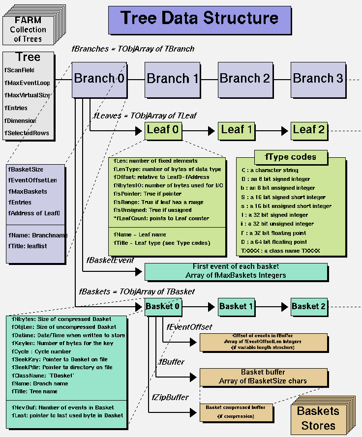
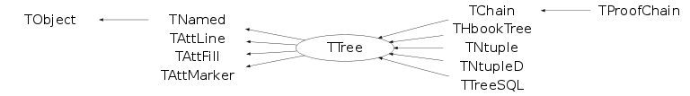
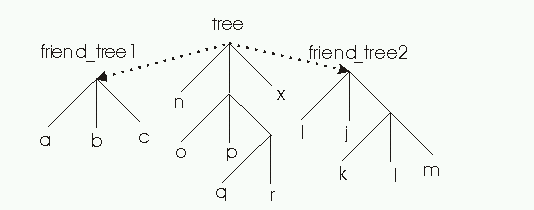
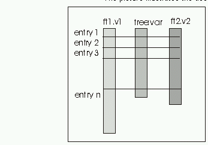

class TTree: public TNamed, public TAttLine, public TAttFill, public TAttMarker
TTree A TTree object has a header with a name and a title. It consists of a list of independent branches (TBranch). Each branch has its own definition and list of buffers. Branch buffers may be automatically written to disk or kept in memory until the Tree attribute fMaxVirtualSize is reached. Variables of one branch are written to the same buffer. A branch buffer is automatically compressed if the file compression attribute is set (default). Branches may be written to different files (see TBranch::SetFile). The ROOT user can decide to make one single branch and serialize one object into one single I/O buffer or to make several branches. Making one single branch and one single buffer can be the right choice when one wants to process only a subset of all entries in the tree. (you know for example the list of entry numbers you want to process). Making several branches is particularly interesting in the data analysis phase, when one wants to histogram some attributes of an object (entry) without reading all the attributes. ==> TTree *tree = new TTree(name, title) Creates a Tree with name and title. Various kinds of branches can be added to a tree: A - simple structures or list of variables. (may be for C or Fortran structures) B - any object (inheriting from TObject). (we expect this option be the most frequent) C - a ClonesArray. (a specialized object for collections of same class objects) ==> Case A TBranch *branch = tree->Branch(branchname, address, leaflist, bufsize) * address is the address of the first item of a structure * leaflist is the concatenation of all the variable names and types separated by a colon character : The variable name and the variable type are separated by a slash (/). The variable type must be 1 character. (Characters after the first are legal and will be appended to the visible name of the leaf, but have no effect.) If no type is given, the type of the variable is assumed to be the same as the previous variable. If the first variable does not have a type, it is assumed of type F by default. The list of currently supported types is given below: - C : a character string terminated by the 0 character - B : an 8 bit signed integer (Char_t) - b : an 8 bit unsigned integer (UChar_t) - S : a 16 bit signed integer (Short_t) - s : a 16 bit unsigned integer (UShort_t) - I : a 32 bit signed integer (Int_t) - i : a 32 bit unsigned integer (UInt_t) - F : a 32 bit floating point (Float_t) - D : a 64 bit floating point (Double_t) - L : a 64 bit signed integer (Long64_t) - l : a 64 bit unsigned integer (ULong64_t) - O : [the letter 'o', not a zero] a boolean (Bool_t) * If the address points to a single numerical variable, the leaflist is optional: int value; tree->Branch(branchname, &value); * If the address points to more than one numerical variable, we strongly recommend that the variable be sorted in decreasing order of size. Any other order will result in a non-portable (even between CINT and compiled code on the platform) TTree (i.e. you will not be able to read it back on a platform with a different padding strategy). ==> Case B TBranch *branch = tree->Branch(branchname, &p_object, bufsize, splitlevel) TBranch *branch = tree->Branch(branchname, className, &p_object, bufsize, splitlevel) * p_object is a pointer to an object. * If className is not specified, Branch uses the type of p_object to determine the type of the object. * If className is used to specify explicitly the object type, the className must be of a type related to the one pointed to by the pointer. It should be either a parent or derived class. * if splitlevel=0, the object is serialized in the branch buffer. * if splitlevel=1, this branch will automatically be split into subbranches, with one subbranch for each data member or object of the object itself. In case the object member is a TClonesArray, the mechanism described in case C is applied to this array. * if splitlevel=2 ,this branch will automatically be split into subbranches, with one subbranch for each data member or object of the object itself. In case the object member is a TClonesArray, it is processed as a TObject*, only one branch. Note: The pointer whose address is passed to TTree::Branch must not be destroyed (i.e. go out of scope) until the TTree is deleted or TTree::ResetBranchAddress is called. Note: The pointer p_object must be initialized before calling TTree::Branch Do either: MyDataClass* p_object = 0; tree->Branch(branchname, &p_object); Or MyDataClass* p_object = new MyDataClass; tree->Branch(branchname, &p_object); ==> Case C MyClass object; TBranch *branch = tree->Branch(branchname, &object, bufsize, splitlevel) Note: The 2nd parameter must be the address of a valid object. The object must not be destroyed (i.e. be deleted) until the TTree is deleted or TTree::ResetBranchAddress is called. * if splitlevel=0, the object is serialized in the branch buffer. * if splitlevel=1 (default), this branch will automatically be split into subbranches, with one subbranch for each data member or object of the object itself. In case the object member is a TClonesArray, the mechanism described in case C is applied to this array. * if splitlevel=2 ,this branch will automatically be split into subbranches, with one subbranch for each data member or object of the object itself. In case the object member is a TClonesArray, it is processed as a TObject*, only one branch. ==> Case D TBranch *branch = tree->Branch(branchname,clonesarray, bufsize, splitlevel) clonesarray is the address of a pointer to a TClonesArray. The TClonesArray is a direct access list of objects of the same class. For example, if the TClonesArray is an array of TTrack objects, this function will create one subbranch for each data member of the object TTrack. ==> Case E TBranch *branch = tree->Branch( branchname, STLcollection, buffsize, splitlevel); STLcollection is the address of a pointer to std::vector, std::list, std::deque, std::set or std::multiset containing pointers to objects. If the splitlevel is a value bigger than 100 (TTree::kSplitCollectionOfPointers) then the collection will be written in split mode, e.g. if it contains objects of any types deriving from TTrack this function will sort the objects based on their type and store them in separate branches in split mode. ==> branch->SetAddress(Void *address) In case of dynamic structures changing with each entry for example, one must redefine the branch address before filling the branch again. This is done via the TBranch::SetAddress member function. ==> tree->Fill() loops on all defined branches and for each branch invokes the Fill function. See also the class TNtuple (a simple Tree with branches of floats) Adding a Branch to an Existing Tree You may want to add a branch to an existing tree. For example, if one variable in the tree was computed with a certain algorithm, you may want to try another algorithm and compare the results. One solution is to add a new branch, fill it, and save the tree. The code below adds a simple branch to an existing tree. Note the kOverwrite option in the Write method, it overwrites the existing tree. If it is not specified, two copies of the tree headers are saved. void tree3AddBranch(){ TFile f("tree3.root", "update"); Float_t new_v; TTree *t3 = (TTree*)f->Get("t3"); TBranch *newBranch = t3->Branch("new_v", &new_v, "new_v/F"); //read the number of entries in the t3 Long64_t nentries = t3->GetEntries(); for (Long64_t i = 0; i < nentries; i++){ new_v= gRandom->Gaus(0, 1); newBranch->Fill(); } // save only the new version of the tree t3->Write("", TObject::kOverwrite); } Adding a branch is often not possible because the tree is in a read-only file and you do not have permission to save the modified tree with the new branch. Even if you do have the permission, you risk losing the original tree with an unsuccessful attempt to save the modification. Since trees are usually large, adding a branch could extend it over the 2GB limit. In this case, the attempt to write the tree fails, and the original data is erased. In addition, adding a branch to a tree enlarges the tree and increases the amount of memory needed to read an entry, and therefore decreases the performance. For these reasons, ROOT offers the concept of friends for trees (and chains). We encourage you to use TTree::AddFriend rather than adding a branch manually./*  */
A simple example with histograms and a tree*-*-*-
*-* ===========================================
This program creates :
- a one dimensional histogram
- a two dimensional histogram
- a profile histogram
- a tree
These objects are filled with some random numbers and saved on a file.
-*-*-*-*-*-*-*-*-*-*-*-*-*-*-*-*-*-*-*-*-*-*-*-*-*-*-*-*-*-*-*-*-*-*-*
#include "TFile.h"
#include "TH1.h"
#include "TH2.h"
#include "TProfile.h"
#include "TRandom.h"
#include "TTree.h"
//______________________________________________________________________________
main(int argc, char **argv)
{
// Create a new ROOT binary machine independent file.
// Note that this file may contain any kind of ROOT objects, histograms,trees
// pictures, graphics objects, detector geometries, tracks, events, etc..
// This file is now becoming the current directory.
TFile hfile("htree.root","RECREATE","Demo ROOT file with histograms & trees");
// Create some histograms and a profile histogram
TH1F *hpx = new TH1F("hpx","This is the px distribution",100,-4,4);
TH2F *hpxpy = new TH2F("hpxpy","py ps px",40,-4,4,40,-4,4);
TProfile *hprof = new TProfile("hprof","Profile of pz versus px",100,-4,4,0,20);
// Define some simple structures
typedef struct {Float_t x,y,z;} POINT;
typedef struct {
Int_t ntrack,nseg,nvertex;
UInt_t flag;
Float_t temperature;
} EVENTN;
static POINT point;
static EVENTN eventn;
// Create a ROOT Tree
TTree *tree = new TTree("T","An example of ROOT tree with a few branches");
tree->Branch("point",&point,"x:y:z");
tree->Branch("eventn",&eventn,"ntrack/I:nseg:nvertex:flag/i:temperature/F");
tree->Branch("hpx","TH1F",&hpx,128000,0);
Float_t px,py,pz;
static Float_t p[3];
//--------------------Here we start a loop on 1000 events
for ( Int_t i=0; i<1000; i++) {
gRandom->Rannor(px,py);
pz = px*px + py*py;
Float_t random = gRandom->::Rndm(1);
// Fill histograms
hpx->Fill(px);
hpxpy->Fill(px,py,1);
hprof->Fill(px,pz,1);
// Fill structures
p[0] = px;
p[1] = py;
p[2] = pz;
point.x = 10*(random-1);;
point.y = 5*random;
point.z = 20*random;
eventn.ntrack = Int_t(100*random);
eventn.nseg = Int_t(2*eventn.ntrack);
eventn.nvertex = 1;
eventn.flag = Int_t(random+0.5);
eventn.temperature = 20+random;
// Fill the tree. For each event, save the 2 structures and 3 objects
// In this simple example, the objects hpx, hprof and hpxpy are slightly
// different from event to event. We expect a big compression factor!
tree->Fill();
}
//--------------End of the loop
tree->Print();
// Save all objects in this file
hfile.Write();
// Close the file. Note that this is automatically done when you leave
// the application.
hfile.Close();
return 0;
}
Function Members (Methods)
public:
| TTree() | |
| TTree(const char* name, const char* title, Int_t splitlevel = 99) | |
| virtual | ~TTree() |
| void | TObject::AbstractMethod(const char* method) const |
| virtual void | AddBranchToCache(const char* bname, Bool_t subbranches = kFALSE) |
| virtual void | AddBranchToCache(TBranch* branch, Bool_t subbranches = kFALSE) |
| virtual TFriendElement* | AddFriend(const char* treename, const char* filename = "") |
| virtual TFriendElement* | AddFriend(const char* treename, TFile* file) |
| virtual TFriendElement* | AddFriend(TTree* tree, const char* alias = "", Bool_t warn = kFALSE) |
| virtual void | AddTotBytes(Int_t tot) |
| virtual void | AddZipBytes(Int_t zip) |
| virtual void | TObject::AppendPad(Option_t* option = "") |
| virtual Long64_t | AutoSave(Option_t* option = "") |
| virtual Int_t | Branch(TList* list, Int_t bufsize = 32000, Int_t splitlevel = 99) |
| virtual Int_t | Branch(const char* folder, Int_t bufsize = 32000, Int_t splitlevel = 99) |
| virtual Int_t | Branch(TCollection* list, Int_t bufsize = 32000, Int_t splitlevel = 99, const char* name = "") |
| virtual TBranch* | Branch(const char* name, void* address, const char* leaflist, Int_t bufsize = 32000) |
| TBranch* | Branch(const char* name, char* address, const char* leaflist, Int_t bufsize = 32000) |
| TBranch* | Branch(const char* name, long address, const char* leaflist, Int_t bufsize = 32000) |
| TBranch* | Branch(const char* name, int address, const char* leaflist, Int_t bufsize = 32000) |
| TBranch* | Branch(const char* name, void** obj, Int_t bufsize = 32000, Int_t splitlevel = 99) |
| TBranch* | Branch(const char* name, const char* classname, void** obj, Int_t bufsize = 32000, Int_t splitlevel = 99) |
| virtual TBranch* | BranchOld(const char* name, const char* classname, void* addobj, Int_t bufsize = 32000, Int_t splitlevel = 1) |
| virtual TBranch* | BranchRef() |
| virtual TBranch* | Bronch(const char* name, const char* classname, void* addobj, Int_t bufsize = 32000, Int_t splitlevel = 99) |
| virtual void | Browse(TBrowser*) |
| virtual Int_t | BuildIndex(const char* majorname, const char* minorname = "0") |
| TStreamerInfo* | BuildStreamerInfo(TClass* cl, void* pointer = 0, Bool_t canOptimize = kTRUE) |
| virtual TFile* | ChangeFile(TFile* file) |
| static TClass* | Class() |
| virtual const char* | TObject::ClassName() const |
| virtual void | TNamed::Clear(Option_t* option = "") |
| virtual TObject* | TNamed::Clone(const char* newname = "") const |
| virtual TTree* | CloneTree(Long64_t nentries = -1, Option_t* option = "") |
| virtual Int_t | TNamed::Compare(const TObject* obj) const |
| virtual void | TNamed::Copy(TObject& named) const |
| virtual void | CopyAddresses(TTree*, Bool_t undo = kFALSE) |
| virtual Long64_t | CopyEntries(TTree* tree, Long64_t nentries = -1, Option_t* option = "") |
| virtual TTree* | CopyTree(const char* selection, Option_t* option = "", Long64_t nentries = 1000000000, Long64_t firstentry = 0) |
| virtual TBasket* | CreateBasket(TBranch*) |
| Int_t | Debug() const |
| virtual void | Delete(Option_t* option = "")MENU |
| virtual void | DirectoryAutoAdd(TDirectory*) |
| Int_t | TAttLine::DistancetoLine(Int_t px, Int_t py, Double_t xp1, Double_t yp1, Double_t xp2, Double_t yp2) |
| virtual Int_t | TObject::DistancetoPrimitive(Int_t px, Int_t py) |
| virtual void | Draw(Option_t* opt) |
| virtual Long64_t | Draw(const char* varexp, const TCut& selection, Option_t* option = "", Long64_t nentries = 1000000000, Long64_t firstentry = 0) |
| virtual Long64_t | Draw(const char* varexp, const char* selection, Option_t* option = "", Long64_t nentries = 1000000000, Long64_t firstentry = 0)MENU |
| virtual void | TObject::DrawClass() constMENU |
| virtual TObject* | TObject::DrawClone(Option_t* option = "") constMENU |
| virtual void | DropBaskets() |
| virtual void | DropBranchFromCache(const char* bname, Bool_t subbranches = kFALSE) |
| virtual void | DropBranchFromCache(TBranch* branch, Bool_t subbranches = kFALSE) |
| virtual void | DropBuffers(Int_t nbytes) |
| virtual void | TObject::Dump() constMENU |
| virtual void | TObject::Error(const char* method, const char* msgfmt) const |
| virtual void | TObject::Execute(const char* method, const char* params, Int_t* error = 0) |
| virtual void | TObject::Execute(TMethod* method, TObjArray* params, Int_t* error = 0) |
| virtual void | TObject::ExecuteEvent(Int_t event, Int_t px, Int_t py) |
| virtual void | TObject::Fatal(const char* method, const char* msgfmt) const |
| virtual Int_t | Fill() |
| virtual void | TNamed::FillBuffer(char*& buffer) |
| virtual TBranch* | FindBranch(const char* name) |
| virtual TLeaf* | FindLeaf(const char* name) |
| virtual TObject* | TObject::FindObject(const char* name) const |
| virtual TObject* | TObject::FindObject(const TObject* obj) const |
| virtual Int_t | Fit(const char* funcname, const char* varexp, const char* selection = "", Option_t* option = "", Option_t* goption = "", Long64_t nentries = 1000000000, Long64_t firstentry = 0)MENU |
| virtual Int_t | FlushBaskets() const |
| virtual const char* | GetAlias(const char* aliasName) const |
| virtual Long64_t | GetAutoFlush() const |
| virtual Long64_t | GetAutoSave() const |
| virtual TBranch* | GetBranch(const char* name) |
| virtual TBranchRef* | GetBranchRef() const |
| virtual Bool_t | GetBranchStatus(const char* branchname) const |
| static Int_t | GetBranchStyle() |
| virtual Long64_t | GetCacheSize() const |
| virtual Long64_t | GetChainEntryNumber(Long64_t entry) const |
| virtual Long64_t | GetChainOffset() const |
| virtual TTree::TClusterIterator | GetClusterIterator(Long64_t firstentry) |
| TFile* | GetCurrentFile() const |
| Long64_t | GetDebugMax() const |
| Long64_t | GetDebugMin() const |
| Int_t | GetDefaultEntryOffsetLen() const |
| TDirectory* | GetDirectory() const |
| virtual Option_t* | TObject::GetDrawOption() const |
| static Long_t | TObject::GetDtorOnly() |
| virtual Long64_t | GetEntries() const |
| virtual Long64_t | GetEntries(const char* selection) |
| virtual Long64_t | GetEntriesFast() const |
| virtual Long64_t | GetEntriesFriend() const |
| virtual Int_t | GetEntry(Long64_t entry = 0, Int_t getall = 0) |
| virtual TEntryList* | GetEntryList() |
| virtual Long64_t | GetEntryNumber(Long64_t entry) const |
| virtual Long64_t | GetEntryNumberWithBestIndex(Int_t major, Int_t minor = 0) const |
| virtual Long64_t | GetEntryNumberWithIndex(Int_t major, Int_t minor = 0) const |
| virtual Int_t | GetEntryWithIndex(Int_t major, Int_t minor = 0) |
| virtual Long64_t | GetEstimate() const |
| Int_t | GetEvent(Long64_t entry = 0, Int_t getall = 0) |
| TEventList* | GetEventList() const |
| virtual Int_t | GetFileNumber() const |
| virtual Color_t | TAttFill::GetFillColor() const |
| virtual Style_t | TAttFill::GetFillStyle() const |
| virtual TTree* | GetFriend(const char*) const |
| virtual const char* | GetFriendAlias(TTree*) const |
| TH1* | GetHistogram() |
| virtual const char* | TObject::GetIconName() const |
| virtual Int_t* | GetIndex() |
| virtual Double_t* | GetIndexValues() |
| virtual TIterator* | GetIteratorOnAllLeaves(Bool_t dir = kIterForward) |
| virtual TLeaf* | GetLeaf(const char* name) |
| virtual TLeaf* | GetLeaf(const char* branchname, const char* leafname) |
| virtual Color_t | TAttLine::GetLineColor() const |
| virtual Style_t | TAttLine::GetLineStyle() const |
| virtual Width_t | TAttLine::GetLineWidth() const |
| virtual TList* | GetListOfAliases() const |
| virtual TObjArray* | GetListOfBranches() |
| virtual TList* | GetListOfClones() |
| virtual TList* | GetListOfFriends() const |
| virtual TObjArray* | GetListOfLeaves() |
| Int_t | GetMakeClass() const |
| virtual Color_t | TAttMarker::GetMarkerColor() const |
| virtual Size_t | TAttMarker::GetMarkerSize() const |
| virtual Style_t | TAttMarker::GetMarkerStyle() const |
| virtual Long64_t | GetMaxEntryLoop() const |
| virtual Double_t | GetMaximum(const char* columname) |
| static Long64_t | GetMaxTreeSize() |
| virtual Long64_t | GetMaxVirtualSize() const |
| virtual Double_t | GetMinimum(const char* columname) |
| virtual const char* | TNamed::GetName() const |
| virtual Int_t | GetNbranches() |
| TObject* | GetNotify() const |
| virtual char* | TObject::GetObjectInfo(Int_t px, Int_t py) const |
| static Bool_t | TObject::GetObjectStat() |
| virtual Option_t* | TObject::GetOption() const |
| virtual Int_t | GetPacketSize() const |
| TVirtualTreePlayer* | GetPlayer() |
| virtual Long64_t | GetReadEntry() const |
| virtual Long64_t | GetReadEvent() const |
| virtual Int_t | GetScanField() const |
| TTreeFormula* | GetSelect() |
| virtual Long64_t | GetSelectedRows() |
| virtual Int_t | GetTimerInterval() const |
| virtual const char* | TNamed::GetTitle() const |
| virtual Long64_t | GetTotBytes() const |
| TBuffer* | GetTransientBuffer(Int_t size) |
| virtual TTree* | GetTree() const |
| virtual TVirtualIndex* | GetTreeIndex() const |
| virtual Int_t | GetTreeNumber() const |
| virtual UInt_t | TObject::GetUniqueID() const |
| virtual Int_t | GetUpdate() const |
| virtual TList* | GetUserInfo() |
| virtual Double_t* | GetV1() |
| virtual Double_t* | GetV2() |
| virtual Double_t* | GetV3() |
| virtual Double_t* | GetV4() |
| virtual Double_t* | GetVal(Int_t i) |
| TTreeFormula* | GetVar(Int_t i) |
| TTreeFormula* | GetVar1() |
| TTreeFormula* | GetVar2() |
| TTreeFormula* | GetVar3() |
| TTreeFormula* | GetVar4() |
| virtual Double_t* | GetW() |
| virtual Double_t | GetWeight() const |
| virtual Long64_t | GetZipBytes() const |
| virtual Bool_t | TObject::HandleTimer(TTimer* timer) |
| virtual ULong_t | TNamed::Hash() const |
| virtual void | IncrementTotalBuffers(Int_t nbytes) |
| virtual void | TObject::Info(const char* method, const char* msgfmt) const |
| virtual Bool_t | TObject::InheritsFrom(const char* classname) const |
| virtual Bool_t | TObject::InheritsFrom(const TClass* cl) const |
| virtual void | TObject::Inspect() constMENU |
| void | TObject::InvertBit(UInt_t f) |
| virtual TClass* | IsA() const |
| virtual Bool_t | TObject::IsEqual(const TObject* obj) const |
| virtual Bool_t | IsFolder() const |
| Bool_t | TObject::IsOnHeap() const |
| virtual Bool_t | TNamed::IsSortable() const |
| virtual Bool_t | TAttFill::IsTransparent() const |
| Bool_t | TObject::IsZombie() const |
| virtual Int_t | LoadBaskets(Long64_t maxmemory = 2000000000) |
| virtual Long64_t | LoadTree(Long64_t entry) |
| virtual Long64_t | LoadTreeFriend(Long64_t entry, TTree* T) |
| virtual void | TNamed::ls(Option_t* option = "") const |
| virtual Int_t | MakeClass(const char* classname = 0, Option_t* option = "") |
| virtual Int_t | MakeCode(const char* filename = 0) |
| virtual Int_t | MakeProxy(const char* classname, const char* macrofilename = 0, const char* cutfilename = 0, const char* option = 0, Int_t maxUnrolling = 3) |
| virtual Int_t | MakeSelector(const char* selector = 0) |
| void | TObject::MayNotUse(const char* method) const |
| Bool_t | MemoryFull(Int_t nbytes) |
| virtual Long64_t | Merge(TCollection* list, Option_t* option = "") |
| virtual Long64_t | Merge(TCollection* list, TFileMergeInfo* info) |
| static TTree* | MergeTrees(TList* list, Option_t* option = "") |
| virtual void | TAttLine::Modify() |
| virtual Bool_t | Notify() |
| void | TObject::Obsolete(const char* method, const char* asOfVers, const char* removedFromVers) const |
| static void | TObject::operator delete(void* ptr) |
| static void | TObject::operator delete(void* ptr, void* vp) |
| static void | TObject::operator delete[](void* ptr) |
| static void | TObject::operator delete[](void* ptr, void* vp) |
| void* | TObject::operator new(size_t sz) |
| void* | TObject::operator new(size_t sz, void* vp) |
| void* | TObject::operator new[](size_t sz) |
| void* | TObject::operator new[](size_t sz, void* vp) |
| virtual void | OptimizeBaskets(ULong64_t maxMemory = 10000000, Float_t minComp = 1.1, Option_t* option = "") |
| virtual void | TObject::Paint(Option_t* option = "") |
| virtual void | TObject::Pop() |
| TPrincipal* | Principal(const char* varexp = "", const char* selection = "", Option_t* option = "np", Long64_t nentries = 1000000000, Long64_t firstentry = 0) |
| virtual void | Print(Option_t* option = "") constMENU |
| virtual void | PrintCacheStats(Option_t* option = "") const |
| virtual Long64_t | Process(const char* filename, Option_t* option = "", Long64_t nentries = 1000000000, Long64_t firstentry = 0)MENU |
| virtual Long64_t | Process(void* selector, Option_t* option = "", Long64_t nentries = 1000000000, Long64_t firstentry = 0) |
| virtual Long64_t | Project(const char* hname, const char* varexp, const char* selection = "", Option_t* option = "", Long64_t nentries = 1000000000, Long64_t firstentry = 0) |
| virtual TSQLResult* | Query(const char* varexp = "", const char* selection = "", Option_t* option = "", Long64_t nentries = 1000000000, Long64_t firstentry = 0) |
| virtual Int_t | TObject::Read(const char* name) |
| virtual Long64_t | ReadFile(const char* filename, const char* branchDescriptor = "", char delimiter = ' ') |
| virtual Long64_t | ReadStream(istream& inputStream, const char* branchDescriptor = "", char delimiter = ' ') |
| virtual void | RecursiveRemove(TObject* obj) |
| virtual void | Refresh() |
| virtual void | RemoveFriend(TTree*) |
| virtual void | Reset(Option_t* option = "") |
| virtual void | ResetAfterMerge(TFileMergeInfo*) |
| virtual void | TAttFill::ResetAttFill(Option_t* option = "") |
| virtual void | TAttLine::ResetAttLine(Option_t* option = "") |
| virtual void | TAttMarker::ResetAttMarker(Option_t* toption = "") |
| void | TObject::ResetBit(UInt_t f) |
| virtual void | ResetBranchAddress(TBranch*) |
| virtual void | ResetBranchAddresses() |
| virtual void | TObject::SaveAs(const char* filename = "", Option_t* option = "") constMENU |
| virtual void | TAttFill::SaveFillAttributes(ostream& out, const char* name, Int_t coldef = 1, Int_t stydef = 1001) |
| virtual void | TAttLine::SaveLineAttributes(ostream& out, const char* name, Int_t coldef = 1, Int_t stydef = 1, Int_t widdef = 1) |
| virtual void | TAttMarker::SaveMarkerAttributes(ostream& out, const char* name, Int_t coldef = 1, Int_t stydef = 1, Int_t sizdef = 1) |
| virtual void | TObject::SavePrimitive(ostream& out, Option_t* option = "") |
| virtual Long64_t | Scan(const char* varexp = "", const char* selection = "", Option_t* option = "", Long64_t nentries = 1000000000, Long64_t firstentry = 0)MENU |
| virtual Bool_t | SetAlias(const char* aliasName, const char* aliasFormula) |
| virtual void | SetAutoFlush(Long64_t autof = 30000000) |
| virtual void | SetAutoSave(Long64_t autos = 300000000) |
| virtual void | SetBasketSize(const char* bname, Int_t buffsize = 16000) |
| void | TObject::SetBit(UInt_t f) |
| void | TObject::SetBit(UInt_t f, Bool_t set) |
| Int_t | SetBranchAddress(const char* bname, void** add, TBranch** ptr = 0) |
| virtual Int_t | SetBranchAddress(const char* bname, void* add, TClass* realClass, EDataType datatype, Bool_t isptr) |
| virtual Int_t | SetBranchAddress(const char* bname, void* add, TBranch** ptr, TClass* realClass, EDataType datatype, Bool_t isptr) |
| virtual void | SetBranchStatus(const char* bname, Bool_t status = 1, UInt_t* found = 0) |
| static void | SetBranchStyle(Int_t style = 1) |
| virtual void | SetCacheEntryRange(Long64_t first, Long64_t last) |
| virtual void | SetCacheLearnEntries(Int_t n = 10) |
| virtual void | SetCacheSize(Long64_t cachesize = -1) |
| virtual void | SetChainOffset(Long64_t offset = 0) |
| virtual void | SetCircular(Long64_t maxEntries) |
| virtual void | SetDebug(Int_t level = 1, Long64_t min = 0, Long64_t max = 9999999)MENU |
| virtual void | SetDefaultEntryOffsetLen(Int_t newdefault, Bool_t updateExisting = kFALSE) |
| virtual void | SetDirectory(TDirectory* dir) |
| virtual void | TObject::SetDrawOption(Option_t* option = "")MENU |
| static void | TObject::SetDtorOnly(void* obj) |
| virtual Long64_t | SetEntries(Long64_t n = -1) |
| virtual void | SetEntryList(TEntryList* list, Option_t* opt = "") |
| virtual void | SetEstimate(Long64_t nentries = 10000) |
| virtual void | SetEventList(TEventList* list) |
| virtual void | SetFileNumber(Int_t number = 0) |
| virtual void | TAttFill::SetFillAttributes()MENU |
| virtual void | TAttFill::SetFillColor(Color_t fcolor) |
| virtual void | TAttFill::SetFillStyle(Style_t fstyle) |
| virtual void | TAttLine::SetLineAttributes()MENU |
| virtual void | TAttLine::SetLineColor(Color_t lcolor) |
| virtual void | TAttLine::SetLineStyle(Style_t lstyle) |
| virtual void | TAttLine::SetLineWidth(Width_t lwidth) |
| virtual void | SetMakeClass(Int_t make) |
| virtual void | TAttMarker::SetMarkerAttributes()MENU |
| virtual void | TAttMarker::SetMarkerColor(Color_t tcolor = 1) |
| virtual void | TAttMarker::SetMarkerSize(Size_t msize = 1) |
| virtual void | TAttMarker::SetMarkerStyle(Style_t mstyle = 1) |
| virtual void | SetMaxEntryLoop(Long64_t maxev = 1000000000)MENU |
| static void | SetMaxTreeSize(Long64_t maxsize = 1900000000) |
| virtual void | SetMaxVirtualSize(Long64_t size = 0)MENU |
| virtual void | SetName(const char* name)MENU |
| virtual void | TNamed::SetNameTitle(const char* name, const char* title) |
| virtual void | SetNotify(TObject* obj) |
| virtual void | SetObject(const char* name, const char* title) |
| static void | TObject::SetObjectStat(Bool_t stat) |
| virtual void | SetParallelUnzip(Bool_t opt = kTRUE, Float_t RelSize = -1) |
| virtual void | SetScanField(Int_t n = 50)MENU |
| virtual void | SetTimerInterval(Int_t msec = 333) |
| virtual void | TNamed::SetTitle(const char* title = "")MENU |
| virtual void | SetTreeIndex(TVirtualIndex* index) |
| virtual void | TObject::SetUniqueID(UInt_t uid) |
| virtual void | SetUpdate(Int_t freq = 0) |
| virtual void | SetWeight(Double_t w = 1, Option_t* option = "") |
| virtual void | Show(Long64_t entry = -1, Int_t lenmax = 20) |
| virtual void | ShowMembers(TMemberInspector& insp) |
| virtual Int_t | TNamed::Sizeof() const |
| virtual void | StartViewer()MENU |
| virtual void | StopCacheLearningPhase() |
| virtual void | Streamer(TBuffer& b) |
| void | StreamerNVirtual(TBuffer& b) |
| virtual void | TObject::SysError(const char* method, const char* msgfmt) const |
| Bool_t | TObject::TestBit(UInt_t f) const |
| Int_t | TObject::TestBits(UInt_t f) const |
| virtual Int_t | UnbinnedFit(const char* funcname, const char* varexp, const char* selection = "", Option_t* option = "", Long64_t nentries = 1000000000, Long64_t firstentry = 0) |
| virtual void | UseCurrentStyle() |
| virtual void | TObject::Warning(const char* method, const char* msgfmt) const |
| virtual Int_t | Write(const char* name = 0, Int_t option = 0, Int_t bufsize = 0) |
| virtual Int_t | Write(const char* name = 0, Int_t option = 0, Int_t bufsize = 0) const |
protected:
| void | AddClone(TTree*) |
| virtual TBranch* | BranchImp(const char* branchname, TClass* ptrClass, void* addobj, Int_t bufsize, Int_t splitlevel) |
| virtual TBranch* | BranchImp(const char* branchname, const char* classname, TClass* ptrClass, void* addobj, Int_t bufsize, Int_t splitlevel) |
| virtual TBranch* | BranchImpRef(const char* branchname, const char* classname, TClass* ptrClass, void* addobj, Int_t bufsize, Int_t splitlevel) |
| virtual TBranch* | BranchImpRef(const char* branchname, TClass* ptrClass, EDataType datatype, void* addobj, Int_t bufsize, Int_t splitlevel) |
| virtual TBranch* | BronchExec(const char* name, const char* classname, void* addobj, Bool_t isptrptr, Int_t bufsize, Int_t splitlevel) |
| virtual Int_t | CheckBranchAddressType(TBranch* branch, TClass* ptrClass, EDataType datatype, Bool_t ptr) |
| virtual void | TObject::DoError(int level, const char* location, const char* fmt, va_list va) const |
| virtual TLeaf* | GetLeafImpl(const char* branchname, const char* leafname) |
| char | GetNewlineValue(istream& inputStream) |
| void | ImportClusterRanges(TTree* fromtree) |
| virtual void | KeepCircular() |
| void | TObject::MakeZombie() |
| Int_t | SetBranchAddressImp(TBranch* branch, void* addr, TBranch** ptr) |
Data Members
public:
| enum ELockStatusBits { | kFindBranch | |
| kFindLeaf | ||
| kGetAlias | ||
| kGetBranch | ||
| kGetEntry | ||
| kGetEntryWithIndex | ||
| kGetFriend | ||
| kGetFriendAlias | ||
| kGetLeaf | ||
| kLoadTree | ||
| kPrint | ||
| kRemoveFriend | ||
| kSetBranchStatus | ||
| }; | ||
| enum SetBranchAddressStatus { | kMissingBranch | |
| kInternalError | ||
| kMissingCompiledCollectionProxy | ||
| kMismatch | ||
| kClassMismatch | ||
| kMatch | ||
| kMatchConversion | ||
| kMatchConversionCollection | ||
| kMakeClass | ||
| kVoidPtr | ||
| kNoCheck | ||
| }; | ||
| enum { | kForceRead | |
| kCircular | ||
| kSplitCollectionOfPointers | ||
| }; | ||
| enum TObject::EStatusBits { | kCanDelete | |
| kMustCleanup | ||
| kObjInCanvas | ||
| kIsReferenced | ||
| kHasUUID | ||
| kCannotPick | ||
| kNoContextMenu | ||
| kInvalidObject | ||
| }; | ||
| enum TObject::[unnamed] { | kIsOnHeap | |
| kNotDeleted | ||
| kZombie | ||
| kBitMask | ||
| kSingleKey | ||
| kOverwrite | ||
| kWriteDelete | ||
| }; |
protected:
| TList* | fAliases | List of aliases for expressions based on the tree branches. |
| Long64_t | fAutoFlush | Autoflush tree when fAutoFlush entries written |
| Long64_t | fAutoSave | Autosave tree when fAutoSave bytes produced |
| TBranchRef* | fBranchRef | Branch supporting the TRefTable (if any) |
| TObjArray | fBranches | List of Branches |
| Long64_t | fCacheSize | ! Maximum size of file buffers |
| Long64_t | fChainOffset | ! Offset of 1st entry of this Tree in a TChain |
| TList* | fClones | ! List of cloned trees which share our addresses |
| Long64_t* | fClusterRangeEnd | [fNClusterRange] Last entry of a cluster range. |
| Long64_t* | fClusterSize | [fNClusterRange] Number of entries in each cluster for a given range. |
| Int_t | fDebug | ! Debug level |
| Long64_t | fDebugMax | ! Last entry number to debug |
| Long64_t | fDebugMin | ! First entry number to debug |
| Int_t | fDefaultEntryOffsetLen | Initial Length of fEntryOffset table in the basket buffers |
| TDirectory* | fDirectory | ! Pointer to directory holding this tree |
| Long64_t | fEntries | Number of entries |
| TEntryList* | fEntryList | ! Pointer to event selection list (if one) |
| Long64_t | fEstimate | Number of entries to estimate histogram limits |
| TEventList* | fEventList | ! Pointer to event selection list (if one) |
| Int_t | fFileNumber | ! current file number (if file extensions) |
| Color_t | TAttFill::fFillColor | fill area color |
| Style_t | TAttFill::fFillStyle | fill area style |
| Long64_t | fFlushedBytes | Number of autoflushed bytes |
| UInt_t | fFriendLockStatus | ! Record which method is locking the friend recursion |
| TList* | fFriends | pointer to list of friend elements |
| TArrayI | fIndex | Index of sorted values |
| TArrayD | fIndexValues | Sorted index values |
| TObjArray | fLeaves | Direct pointers to individual branch leaves |
| Color_t | TAttLine::fLineColor | line color |
| Style_t | TAttLine::fLineStyle | line style |
| Width_t | TAttLine::fLineWidth | line width |
| Int_t | fMakeClass | ! not zero when processing code generated by MakeClass |
| Color_t | TAttMarker::fMarkerColor | Marker color index |
| Size_t | TAttMarker::fMarkerSize | Marker size |
| Style_t | TAttMarker::fMarkerStyle | Marker style |
| Int_t | fMaxClusterRange | ! Memory allocated for the cluster range. |
| Long64_t | fMaxEntries | Maximum number of entries in case of circular buffers |
| Long64_t | fMaxEntryLoop | Maximum number of entries to process |
| Long64_t | fMaxVirtualSize | Maximum total size of buffers kept in memory |
| Int_t | fNClusterRange | Number of Cluster range in addition to the one defined by 'AutoFlush' |
| TString | TNamed::fName | object identifier |
| Int_t | fNfill | ! Local for EntryLoop |
| TObject* | fNotify | ! Object to be notified when loading a Tree |
| Int_t | fPacketSize | ! Number of entries in one packet for parallel root |
| TVirtualTreePlayer* | fPlayer | ! Pointer to current Tree player |
| Long64_t | fReadEntry | ! Number of the entry being processed |
| Long64_t | fSavedBytes | Number of autosaved bytes |
| Int_t | fScanField | Number of runs before prompting in Scan |
| Int_t | fTimerInterval | Timer interval in milliseconds |
| TString | TNamed::fTitle | object title |
| Long64_t | fTotBytes | Total number of bytes in all branches before compression |
| Long64_t | fTotalBuffers | ! Total number of bytes in branch buffers |
| TBuffer* | fTransientBuffer | ! Pointer to the current transient buffer. |
| TVirtualIndex* | fTreeIndex | Pointer to the tree Index (if any) |
| Int_t | fUpdate | Update frequency for EntryLoop |
| TList* | fUserInfo | pointer to a list of user objects associated to this Tree |
| Double_t | fWeight | Tree weight (see TTree::SetWeight) |
| Long64_t | fZipBytes | Total number of bytes in all branches after compression |
| static Int_t | fgBranchStyle | Old/New branch style |
| static Long64_t | fgMaxTreeSize | Maximum size of a file containg a Tree |
Class Charts
{kind=link}
{kind=link}
{kind=link}
{kind=link}

Function documentation
TTree()
Default constructor and I/O constructor. Note: We do *not* insert ourself into the current directory.
TTree(const char* name, const char* title, Int_t splitlevel = 99)
Normal tree constructor. The tree is created in the current directory. Use the various functions Branch below to add branches to this tree. If the first character of title is a "/", the function assumes a folder name. In this case, it creates automatically branches following the folder hierarchy. splitlevel may be used in this case to control the split level.
TBuffer* GetTransientBuffer(Int_t size)
Returns the transient buffer currently used by this TTree for reading/writing baskets
void AddBranchToCache(const char* bname, Bool_t subbranches = kFALSE)
Add branch with name bname to the Tree cache. If bname="*" all branches are added to the cache. if subbranches is true all the branches of the subbranches are also put to the cache.
void AddBranchToCache(TBranch* branch, Bool_t subbranches = kFALSE)
Add branch b to the Tree cache. if subbranches is true all the branches of the subbranches are also put to the cache.
void DropBranchFromCache(const char* bname, Bool_t subbranches = kFALSE)
Add branch with name bname to the Tree cache. If bname="*" all branches are added to the cache. if subbranches is true all the branches of the subbranches are also put to the cache.
void DropBranchFromCache(TBranch* branch, Bool_t subbranches = kFALSE)
Add branch b to the Tree cache. if subbranches is true all the branches of the subbranches are also put to the cache.
void AddClone(TTree* )
Add a cloned tree to our list of trees to be notified whenever we change our branch addresses or when we are deleted.
TFriendElement* AddFriend(const char* treename, const char* filename = "")
Add a TFriendElement to the list of friends. This function: -opens a file if filename is specified -reads a Tree with name treename from the file (current directory) -adds the Tree to the list of friends see other AddFriend functions A TFriendElement TF describes a TTree object TF in a file. When a TFriendElement TF is added to the the list of friends of an existing TTree T, any variable from TF can be referenced in a query to T. A tree keeps a list of friends. In the context of a tree (or a chain), friendship means unrestricted access to the friends data. In this way it is much like adding another branch to the tree without taking the risk of damaging it. To add a friend to the list, you can use the TTree::AddFriend method. The tree in the diagram below has two friends (friend_tree1 and friend_tree2) and now has access to the variables a,b,c,i,j,k,l and m./*  */
The AddFriend method has two parameters, the first is the tree name and the second is the name of the ROOT file where the friend tree is saved. AddFriend automatically opens the friend file. If no file name is given, the tree called ft1 is assumed to be in the same file as the original tree. tree.AddFriend("ft1","friendfile1.root"); If the friend tree has the same name as the original tree, you can give it an alias sin the context of the friendship: tree.AddFriend("tree1 = tree","friendfile1.root"); Once the tree has friends, we can use TTree::Draw as if the friend's variables were in the original tree. To specify which tree to use in the Draw method, use the syntax: <treeName>.<branchname>.<varname> If the variablename is enough to uniquely identify the variable, you can leave out the tree and/or branch name. For example, these commands generate a 3-d scatter plot of variable "var" in the TTree tree versus variable v1 in TTree ft1 versus variable v2 in TTree ft2. tree.AddFriend("ft1","friendfile1.root"); tree.AddFriend("ft2","friendfile2.root"); tree.Draw("var:ft1.v1:ft2.v2");/*  */
The picture illustrates the access of the tree and its friends with a Draw command. When AddFriend is called, the ROOT file is automatically opened and the friend tree (ft1) is read into memory. The new friend (ft1) is added to the list of friends of tree. The number of entries in the friend must be equal or greater to the number of entries of the original tree. If the friend tree has fewer entries a warning is given and the missing entries are not included in the histogram. To retrieve the list of friends from a tree use TTree::GetListOfFriends. When the tree is written to file (TTree::Write), the friends list is saved with it. And when the tree is retrieved, the trees on the friends list are also retrieved and the friendship restored. When a tree is deleted, the elements of the friend list are also deleted. It is possible to declare a friend tree that has the same internal structure (same branches and leaves) as the original tree, and compare the same values by specifying the tree. tree.Draw("var:ft1.var:ft2.var")
TFriendElement* AddFriend(const char* treename, TFile* file)
Add a TFriendElement to the list of friends. The TFile is managed by the user (e.g. the user must delete the file). For complete description see AddFriend(const char *, const char *). This function: -reads a Tree with name treename from the file -adds the Tree to the list of friends
TFriendElement* AddFriend(TTree* tree, const char* alias = "", Bool_t warn = kFALSE)
Add a TFriendElement to the list of friends. The TTree is managed by the user (e.g., the user must delete the file). For a complete description see AddFriend(const char *, const char *).
Long64_t AutoSave(Option_t* option = "")
AutoSave tree header every fAutoSave bytes. When large Trees are produced, it is safe to activate the AutoSave procedure. Some branches may have buffers holding many entries. AutoSave is automatically called by TTree::Fill when the number of bytes generated since the previous AutoSave is greater than fAutoSave bytes. This function may also be invoked by the user, for example every N entries. Each AutoSave generates a new key on the file. Once the key with the tree header has been written, the previous cycle (if any) is deleted. Note that calling TTree::AutoSave too frequently (or similarly calling TTree::SetAutoSave with a small value) is an expensive operation. You should make tests for your own application to find a compromise between speed and the quantity of information you may loose in case of a job crash. In case your program crashes before closing the file holding this tree, the file will be automatically recovered when you will connect the file in UPDATE mode. The Tree will be recovered at the status corresponding to the last AutoSave. if option contains "SaveSelf", gDirectory->SaveSelf() is called. This allows another process to analyze the Tree while the Tree is being filled. if option contains "FlushBaskets", TTree::FlushBaskets is called and all the current basket are closed-out and written to disk individually. By default the previous header is deleted after having written the new header. if option contains "Overwrite", the previous Tree header is deleted before written the new header. This option is slightly faster, but the default option is safer in case of a problem (disk quota exceeded) when writing the new header. The function returns the number of bytes written to the file. if the number of bytes is null, an error has occurred while writing the header to the file. How to write a Tree in one process and view it from another process The following two scripts illustrate how to do this. The script treew.C is executed by process1, treer.C by process2 ----- script treew.C void treew() { TFile f("test.root","recreate"); TNtuple *ntuple = new TNtuple("ntuple","Demo","px:py:pz:random:i"); Float_t px, py, pz; for ( Int_t i=0; i<10000000; i++) { gRandom->Rannor(px,py); pz = px*px + py*py; Float_t random = gRandom->Rndm(1); ntuple->Fill(px,py,pz,random,i); if (i%1000 == 1) ntuple->AutoSave("SaveSelf"); } } ----- script treer.C void treer() { TFile f("test.root"); TTree *ntuple = (TTree*)f.Get("ntuple"); TCanvas c1; Int_t first = 0; while(1) { if (first == 0) ntuple->Draw("px>>hpx", "","",10000000,first); else ntuple->Draw("px>>+hpx","","",10000000,first); first = (Int_t)ntuple->GetEntries(); c1.Update(); gSystem->Sleep(1000); //sleep 1 second ntuple->Refresh(); } }
TBranch* BranchImp(const char* branchname, const char* classname, TClass* ptrClass, void* addobj, Int_t bufsize, Int_t splitlevel)
TBranch* BranchImp(const char* branchname, TClass* ptrClass, void* addobj, Int_t bufsize, Int_t splitlevel)
TBranch* BranchImpRef(const char* branchname, const char* classname, TClass* ptrClass, void* addobj, Int_t bufsize, Int_t splitlevel)
TBranch* BranchImpRef(const char* branchname, TClass* ptrClass, EDataType datatype, void* addobj, Int_t bufsize, Int_t splitlevel)
Int_t Branch(TList* list, Int_t bufsize = 32000, Int_t splitlevel = 99)
Deprecated function. Use next function instead.
Int_t Branch(TCollection* list, Int_t bufsize = 32000, Int_t splitlevel = 99, const char* name = "")
Create one branch for each element in the collection. Each entry in the collection becomes a top level branch if the corresponding class is not a collection. If it is a collection, the entry in the collection becomes in turn top level branches, etc. The splitlevel is decreased by 1 every time a new collection is found. For example if list is a TObjArray* - if splitlevel = 1, one top level branch is created for each element of the TObjArray. - if splitlevel = 2, one top level branch is created for each array element. if, in turn, one of the array elements is a TCollection, one top level branch will be created for each element of this collection. In case a collection element is a TClonesArray, the special Tree constructor for TClonesArray is called. The collection itself cannot be a TClonesArray. The function returns the total number of branches created. If name is given, all branch names will be prefixed with name_. IMPORTANT NOTE1: This function should not be called with splitlevel < 1. IMPORTANT NOTE2: The branches created by this function will have names corresponding to the collection or object names. It is important to give names to collections to avoid misleading branch names or identical branch names. By default collections have a name equal to the corresponding class name, e.g. the default name for a TList is "TList". Example--------------------------------------------------------------: { TTree T("T","test list"); TList *list = new TList(); TObjArray *a1 = new TObjArray(); a1->SetName("a1"); list->Add(a1); TH1F *ha1a = new TH1F("ha1a","ha1",100,0,1); TH1F *ha1b = new TH1F("ha1b","ha1",100,0,1); a1->Add(ha1a); a1->Add(ha1b); TObjArray *b1 = new TObjArray(); b1->SetName("b1"); list->Add(b1); TH1F *hb1a = new TH1F("hb1a","hb1",100,0,1); TH1F *hb1b = new TH1F("hb1b","hb1",100,0,1); b1->Add(hb1a); b1->Add(hb1b); TObjArray *a2 = new TObjArray(); a2->SetName("a2"); list->Add(a2); TH1S *ha2a = new TH1S("ha2a","ha2",100,0,1); TH1S *ha2b = new TH1S("ha2b","ha2",100,0,1); a2->Add(ha2a); a2->Add(ha2b); T.Branch(list,16000,2); T.Print(); }
Int_t Branch(const char* folder, Int_t bufsize = 32000, Int_t splitlevel = 99)
Create one branch for each element in the folder. Returns the total number of branches created.
TBranch* Branch(const char* name, void* address, const char* leaflist, Int_t bufsize = 32000)
Create a new TTree Branch. This Branch constructor is provided to support non-objects in a Tree. The variables described in leaflist may be simple variables or structures. // See the two following constructors for writing objects in a Tree. By default the branch buffers are stored in the same file as the Tree. use TBranch::SetFile to specify a different file * address is the address of the first item of a structure. * leaflist is the concatenation of all the variable names and types separated by a colon character : The variable name and the variable type are separated by a slash (/). The variable type may be 0,1 or 2 characters. If no type is given, the type of the variable is assumed to be the same as the previous variable. If the first variable does not have a type, it is assumed of type F by default. The list of currently supported types is given below: - C : a character string terminated by the 0 character - B : an 8 bit signed integer (Char_t) - b : an 8 bit unsigned integer (UChar_t) - S : a 16 bit signed integer (Short_t) - s : a 16 bit unsigned integer (UShort_t) - I : a 32 bit signed integer (Int_t) - i : a 32 bit unsigned integer (UInt_t) - F : a 32 bit floating point (Float_t) - D : a 64 bit floating point (Double_t) - L : a 64 bit signed integer (Long64_t) - l : a 64 bit unsigned integer (ULong64_t) - O : [the letter 'o', not a zero] a boolean (Bool_t) Arrays of values are supported with the following syntax: If leaf name has the form var[nelem], where nelem is alphanumeric, then if nelem is a leaf name, it is used as the variable size of the array, otherwise return 0. If leaf name has the form var[nelem], where nelem is a non-negative integer, then it is used as the fixed size of the array. If leaf name has the form of a multi-dimensional array (e.g. var[nelem][nelem2]) where nelem and nelem2 are non-negative integer) then it is used as a 2 dimensional array of fixed size. Any of other form is not supported. Note that the TTree will assume that all the item are contiguous in memory. On some platform, this is not always true of the member of a struct or a class, due to padding and alignment. Sorting your data member in order of decreasing sizeof usually leads to their being contiguous in memory. * bufsize is the buffer size in bytes for this branch The default value is 32000 bytes and should be ok for most cases. You can specify a larger value (e.g. 256000) if your Tree is not split and each entry is large (Megabytes) A small value for bufsize is optimum if you intend to access the entries in the Tree randomly and your Tree is in split mode.
TBranch* Branch(const char* name, const char* classname, void** obj, Int_t bufsize = 32000, Int_t splitlevel = 99)
Create a new branch with the object of class classname at address addobj. WARNING: Starting with Root version 3.01, the Branch function uses the new style branches (TBranchElement). To get the old behaviour, you can: - call BranchOld or - call TTree::SetBranchStyle(0) Note that with the new style, classname does not need to derive from TObject. It must derived from TObject if the branch style has been set to 0 (old) Note: See the comments in TBranchElement::SetAddress() for a more detailed discussion of the meaning of the addobj parameter in the case of new-style branches. Use splitlevel < 0 instead of splitlevel=0 when the class has a custom Streamer Note: if the split level is set to the default (99), TTree::Branch will not issue a warning if the class can not be split.
TBranch* BranchOld(const char* name, const char* classname, void* addobj, Int_t bufsize = 32000, Int_t splitlevel = 1)
Create a new TTree BranchObject. Build a TBranchObject for an object of class classname. addobj is the address of a pointer to an object of class classname. IMPORTANT: classname must derive from TObject. The class dictionary must be available (ClassDef in class header). This option requires access to the library where the corresponding class is defined. Accessing one single data member in the object implies reading the full object. See the next Branch constructor for a more efficient storage in case the entry consists of arrays of identical objects. By default the branch buffers are stored in the same file as the Tree. use TBranch::SetFile to specify a different file IMPORTANT NOTE about branch names In case two or more master branches contain subbranches with identical names, one must add a "." (dot) character at the end of the master branch name. This will force the name of the subbranch to be master.subbranch instead of simply subbranch. This situation happens when the top level object (say event) has two or more members referencing the same class. For example, if a Tree has two branches B1 and B2 corresponding to objects of the same class MyClass, one can do: tree.Branch("B1.","MyClass",&b1,8000,1); tree.Branch("B2.","MyClass",&b2,8000,1); if MyClass has 3 members a,b,c, the two instructions above will generate subbranches called B1.a, B1.b ,B1.c, B2.a, B2.b, B2.c bufsize is the buffer size in bytes for this branch The default value is 32000 bytes and should be ok for most cases. You can specify a larger value (e.g. 256000) if your Tree is not split and each entry is large (Megabytes) A small value for bufsize is optimum if you intend to access the entries in the Tree randomly and your Tree is in split mode.
TBranch* BranchRef()
Build the optional branch supporting the TRefTable. This branch will keep all the information to find the branches containing referenced objects. At each Tree::Fill, the branch numbers containing the referenced objects are saved to the TBranchRef basket. When the Tree header is saved (via TTree::Write), the branch is saved keeping the information with the pointers to the branches having referenced objects.
TBranch* Bronch(const char* name, const char* classname, void* addobj, Int_t bufsize = 32000, Int_t splitlevel = 99)
Create a new TTree BranchElement. WARNING about this new function This function is designed to replace the function TTree::Branch above. This function is far more powerful than the Branch function. It supports the full C++, including STL and has the same behaviour in split or non-split mode. classname does not have to derive from TObject. The function is based on the new TStreamerInfo. Build a TBranchElement for an object of class classname. addr is the address of a pointer to an object of class classname. The class dictionary must be available (ClassDef in class header). Note: See the comments in TBranchElement::SetAddress() for a more detailed discussion of the meaning of the addr parameter. This option requires access to the library where the corresponding class is defined. Accessing one single data member in the object implies reading the full object. By default the branch buffers are stored in the same file as the Tree. use TBranch::SetFile to specify a different file IMPORTANT NOTE about branch names In case two or more master branches contain subbranches with identical names, one must add a "." (dot) character at the end of the master branch name. This will force the name of the subbranch to be master.subbranch instead of simply subbranch. This situation happens when the top level object (say event) has two or more members referencing the same class. For example, if a Tree has two branches B1 and B2 corresponding to objects of the same class MyClass, one can do: tree.Branch("B1.","MyClass",&b1,8000,1); tree.Branch("B2.","MyClass",&b2,8000,1); if MyClass has 3 members a,b,c, the two instructions above will generate subbranches called B1.a, B1.b ,B1.c, B2.a, B2.b, B2.c bufsize is the buffer size in bytes for this branch The default value is 32000 bytes and should be ok for most cases. You can specify a larger value (e.g. 256000) if your Tree is not split and each entry is large (Megabytes) A small value for bufsize is optimum if you intend to access the entries in the Tree randomly and your Tree is in split mode. Use splitlevel < 0 instead of splitlevel=0 when the class has a custom Streamer Note: if the split level is set to the default (99), TTree::Branch will not issue a warning if the class can not be split.
TBranch* BronchExec(const char* name, const char* classname, void* addobj, Bool_t isptrptr, Int_t bufsize, Int_t splitlevel)
Int_t BuildIndex(const char* majorname, const char* minorname = "0")
Build a Tree Index (default is TTreeIndex). See a description of the parameters and functionality in TTreeIndex::TTreeIndex(). The return value is the number of entries in the Index (< 0 indicates failure). A TTreeIndex object pointed by fTreeIndex is created. This object will be automatically deleted by the TTree destructor. See also comments in TTree::SetTreeIndex().
TStreamerInfo* BuildStreamerInfo(TClass* cl, void* pointer = 0, Bool_t canOptimize = kTRUE)
Build StreamerInfo for class cl. pointer is an optional argument that may contain a pointer to an object of cl.
TFile* ChangeFile(TFile* file)
Called by TTree::Fill() when file has reached its maximum fgMaxTreeSize. Create a new file. If the original file is named "myfile.root", subsequent files are named "myfile_1.root", "myfile_2.root", etc. Returns a pointer to the new file. Currently, the automatic change of file is restricted to the case where the tree is in the top level directory. The file should not contain sub-directories. Before switching to a new file, the tree header is written to the current file, then the current file is closed. To process the multiple files created by ChangeFile, one must use a TChain. The new file name has a suffix "_N" where N is equal to fFileNumber+1. By default a Root session starts with fFileNumber=0. One can set fFileNumber to a different value via TTree::SetFileNumber. In case a file named "_N" already exists, the function will try a file named "__N", then "___N", etc. fgMaxTreeSize can be set via the static function TTree::SetMaxTreeSize. The default value of fgMaxTreeSize is 100 Gigabytes. If the current file contains other objects like TH1 and TTree, these objects are automatically moved to the new file. IMPORTANT NOTE: Be careful when writing the final Tree header to the file! Don't do: TFile *file = new TFile("myfile.root","recreate"); TTree *T = new TTree("T","title"); T->Fill(); //loop file->Write(); file->Close(); but do the following: TFile *file = new TFile("myfile.root","recreate"); TTree *T = new TTree("T","title"); T->Fill(); //loop file = T->GetCurrentFile(); //to get the pointer to the current file file->Write(); file->Close();
Int_t CheckBranchAddressType(TBranch* branch, TClass* ptrClass, EDataType datatype, Bool_t ptr)
Check whether or not the address described by the last 3 parameters matches the content of the branch. If a Data Model Evolution conversion is involved, reset the fInfo of the branch. The return values are: kMissingBranch (-5) : Missing branch kInternalError (-4) : Internal error (could not find the type corresponding to a data type number) kMissingCompiledCollectionProxy (-3) : Missing compiled collection proxy for a compiled collection kMismatch (-2) : Non-Class Pointer type given does not match the type expected by the branch kClassMismatch (-1) : Class Pointer type given does not match the type expected by the branch kMatch (0) : perfect match kMatchConversion (1) : match with (I/O) conversion kMatchConversionCollection (2) : match with (I/O) conversion of the content of a collection kMakeClass (3) : MakeClass mode so we can not check. kVoidPtr (4) : void* passed so no check was made. kNoCheck (5) : Underlying TBranch not yet available so no check was made.
TTree* CloneTree(Long64_t nentries = -1, Option_t* option = "")
Create a clone of this tree and copy nentries.
By default copy all entries.
Note that only active branches are copied.
The compression level of the cloned tree is set to the destination file's
compression level.
IMPORTANT: The cloned tree stays connected with this tree until this tree
is deleted. In particular, any changes in branch addresses
in this tree are forwarded to the clone trees, unless a branch
in a clone tree has had its address changed, in which case
that change stays in effect. When this tree is deleted, all the
addresses of the cloned tree are reset to their default values.
If 'option' contains the word 'fast' and nentries is -1, the cloning will be
done without unzipping or unstreaming the baskets (i.e., a direct copy of the
raw bytes on disk).
When 'fast' is specified, 'option' can also contains a
sorting order for the baskets in the output file.
There are currently 3 supported sorting order:
SortBasketsByOffset (the default)
SortBasketsByBranch
SortBasketsByEntry
When using SortBasketsByOffset the baskets are written in
the output file in the same order as in the original file
(i.e. the basket are sorted on their offset in the original
file; Usually this also means that the baskets are sorted
on the index/number of the _last_ entry they contain)
When using SortBasketsByBranch all the baskets of each
individual branches are stored contiguously. This tends to
optimize reading speed when reading a small number (1->5) of
branches, since all their baskets will be clustered together
instead of being spread across the file. However it might
decrease the performance when reading more branches (or the full
entry).
When using SortBasketsByEntry the baskets with the lowest
starting entry are written first. (i.e. the baskets are
sorted on the index/number of the first entry they contain).
This means that on the file the baskets will be in the order
in which they will be needed when reading the whole tree
sequentially.
For examples of CloneTree, see tutorials:
-- copytree
A macro to copy a subset of a TTree to a new TTree.
The input file has been generated by the program in $ROOTSYS/test/Event
with: Event 1000 1 1 1
-- copytree2
A macro to copy a subset of a TTree to a new TTree.
One branch of the new Tree is written to a separate file.
The input file has been generated by the program in $ROOTSYS/test/Event
with: Event 1000 1 1 1
void CopyAddresses(TTree* , Bool_t undo = kFALSE)
Set branch addresses of passed tree equal to ours. If undo is true, reset the branch address instead of copying them. This insures 'separation' of a cloned tree from its original
Long64_t CopyEntries(TTree* tree, Long64_t nentries = -1, Option_t* option = "")
Copy nentries from given tree to this tree. This routines assumes that the branches that intended to be copied are already connected. The typical case is that this tree was created using tree->CloneTree(0). By default copy all entries. Returns number of bytes copied to this tree. If 'option' contains the word 'fast' and nentries is -1, the cloning will be done without unzipping or unstreaming the baskets (i.e., a direct copy of the raw bytes on disk). When 'fast' is specified, 'option' can also contains a sorting order for the baskets in the output file. There are currently 3 supported sorting order: SortBasketsByOffset (the default) SortBasketsByBranch SortBasketsByEntry See TTree::CloneTree for a detailed explanation of the semantics of these 3 options. If the tree or any of the underlying tree of the chain has an index, that index and any index in the subsequent underlying TTree objects will be merged. There are currently three 'options' to control this merging: NoIndex : all the TTreeIndex object are dropped. DropIndexOnError : if any of the underlying TTree object do no have a TTreeIndex, they are all dropped. AsIsIndexOnError [default]: In case of missing TTreeIndex, the resulting TTree index has gaps. BuildIndexOnError : If any of the underlying TTree object do no have a TTreeIndex, all TTreeIndex are 'ignored' and the mising piece are rebuilt.
TTree* CopyTree(const char* selection, Option_t* option = "", Long64_t nentries = 1000000000, Long64_t firstentry = 0)
Copy a tree with selection. IMPORTANT: The returned copied tree stays connected with the original tree until the original tree is deleted. In particular, any changes to the branch addresses in the original tree are also made to the copied tree. Any changes made to the branch addresses of the copied tree are overridden anytime the original tree changes its branch addresses. When the original tree is deleted, all the branch addresses of the copied tree are set to zero. For examples of CopyTree, see the tutorials: copytree Example macro to copy a subset of a tree to a new tree. The input file was generated by running the program in $ROOTSYS/test/Event in this way: ./Event 1000 1 1 1 copytree2 Example macro to copy a subset of a tree to a new tree. One branch of the new tree is written to a separate file. The input file was generated by running the program in $ROOTSYS/test/Event in this way: ./Event 1000 1 1 1 copytree3 Example macro to copy a subset of a tree to a new tree. Only selected entries are copied to the new tree. NOTE that only the active branches are copied.
void Delete(Option_t* option = "")
Delete this tree from memory or/and disk. if option == "all" delete Tree object from memory AND from disk all baskets on disk are deleted. All keys with same name are deleted. if option =="" only Tree object in memory is deleted.
void DirectoryAutoAdd(TDirectory* )
Long64_t Draw(const char* varexp, const TCut& selection, Option_t* option = "", Long64_t nentries = 1000000000, Long64_t firstentry = 0)
Long64_t Draw(const char* varexp, const char* selection, Option_t* option = "", Long64_t nentries = 1000000000, Long64_t firstentry = 0)
Draw expression varexp for specified entries. Returns -1 in case of error or number of selected events in case of success. varexp is an expression of the general form - "e1" produces a 1-d histogram (TH1F) of expression "e1" - "e1:e2" produces an unbinned 2-d scatter-plot (TGraph) of "e1" versus "e2" - "e1:e2:e3" produces an unbinned 3-d scatter-plot (TPolyMarker3D) of "e1" versus "e2" versus "e3" - "e1:e2:e3:e4" produces an unbinned 3-d scatter-plot (TPolyMarker3D) of "e1" versus "e2" versus "e3" and "e4" mapped on the color number. (to create histograms in the 2, 3, and 4 dimesional case, see section "Saving the result of Draw to an histogram") Example: varexp = x simplest case: draw a 1-Dim distribution of column named x = sqrt(x) : draw distribution of sqrt(x) = x*y/z = y:sqrt(x) 2-Dim distribution of y versus sqrt(x) = px:py:pz:2.5*E produces a 3-d scatter-plot of px vs py ps pz and the color number of each marker will be 2.5*E. If the color number is negative it is set to 0. If the color number is greater than the current number of colors it is set to the highest color number. The default number of colors is 50. see TStyle::SetPalette for setting a new color palette. Note that the variables e1, e2 or e3 may contain a selection. example, if e1= x*(y<0), the value histogrammed will be x if y<0 and will be 0 otherwise. The expressions can use all the operations and build-in functions supported by TFormula (See TFormula::Analyze), including free standing function taking numerical arguments (TMath::Bessel). In addition, you can call member functions taking numerical arguments. For example: - "TMath::BreitWigner(fPx,3,2)" - "event.GetHistogram().GetXaxis().GetXmax()" Note: You can only pass expression that depend on the TTree's data to static functions and you can only call non-static member function with 'fixed' parameters. selection is an expression with a combination of the columns. In a selection all the C++ operators are authorized. The value corresponding to the selection expression is used as a weight to fill the histogram. If the expression includes only boolean operations, the result is 0 or 1. If the result is 0, the histogram is not filled. In general, the expression may be of the form: value*(boolean expression) if boolean expression is true, the histogram is filled with a weight = value. Examples: selection1 = "x<y && sqrt(z)>3.2" selection2 = "(x+y)*(sqrt(z)>3.2)" selection1 returns a weigth = 0 or 1 selection2 returns a weight = x+y if sqrt(z)>3.2 returns a weight = 0 otherwise. option is the drawing option. - See TH1::Draw for the list of all drawing options. - If option COL is specified when varexp has three fields: tree.Draw("e1:e2:e3","","col"); a 2D scatter is produced with e1 vs e2, and e3 is mapped on the color table. - If option contains the string "goff", no graphics is generated. nentries is the number of entries to process (default is all) first is the first entry to process (default is 0) This function returns the number of selected entries. It returns -1 if an error occurs. Drawing expressions using arrays and array elements Let assumes, a leaf fMatrix, on the branch fEvent, which is a 3 by 3 array, or a TClonesArray. In a TTree::Draw expression you can now access fMatrix using the following syntaxes: String passed What is used for each entry of the tree "fMatrix" the 9 elements of fMatrix "fMatrix[][]" the 9 elements of fMatrix "fMatrix[2][2]" only the elements fMatrix[2][2] "fMatrix[1]" the 3 elements fMatrix[1][0], fMatrix[1][1] and fMatrix[1][2] "fMatrix[1][]" the 3 elements fMatrix[1][0], fMatrix[1][1] and fMatrix[1][2] "fMatrix[][0]" the 3 elements fMatrix[0][0], fMatrix[1][0] and fMatrix[2][0] "fEvent.fMatrix...." same as "fMatrix..." (unless there is more than one leaf named fMatrix!). In summary, if a specific index is not specified for a dimension, TTree::Draw will loop through all the indices along this dimension. Leaving off the last (right most) dimension of specifying then with the two characters '[]' is equivalent. For variable size arrays (and TClonesArray) the range of the first dimension is recalculated for each entry of the tree. You can also specify the index as an expression of any other variables from the tree. TTree::Draw also now properly handling operations involving 2 or more arrays. Let assume a second matrix fResults[5][2], here are a sample of some of the possible combinations, the number of elements they produce and the loop used: expression element(s) Loop "fMatrix[2][1] - fResults[5][2]" one no loop "fMatrix[2][] - fResults[5][2]" three on 2nd dim fMatrix "fMatrix[2][] - fResults[5][]" two on both 2nd dimensions "fMatrix[][2] - fResults[][1]" three on both 1st dimensions "fMatrix[][2] - fResults[][]" six on both 1st and 2nd dimensions of fResults "fMatrix[][2] - fResults[3][]" two on 1st dim of fMatrix and 2nd of fResults (at the same time) "fMatrix[][] - fResults[][]" six on 1st dim then on 2nd dim "fMatrix[][fResult[][]]" 30 on 1st dim of fMatrix then on both dimensions of fResults. The value if fResults[j][k] is used as the second index of fMatrix. In summary, TTree::Draw loops through all un-specified dimensions. To figure out the range of each loop, we match each unspecified dimension from left to right (ignoring ALL dimensions for which an index has been specified), in the equivalent loop matched dimensions use the same index and are restricted to the smallest range (of only the matched dimensions). When involving variable arrays, the range can of course be different for each entry of the tree. So the loop equivalent to "fMatrix[][2] - fResults[3][]" is: for (Int_t i0; i < min(3,2); i++) { use the value of (fMatrix[i0][2] - fMatrix[3][i0]) } So the loop equivalent to "fMatrix[][2] - fResults[][]" is: for (Int_t i0; i < min(3,5); i++) { for (Int_t i1; i1 < 2; i1++) { use the value of (fMatrix[i0][2] - fMatrix[i0][i1]) } } So the loop equivalent to "fMatrix[][] - fResults[][]" is: for (Int_t i0; i < min(3,5); i++) { for (Int_t i1; i1 < min(3,2); i1++) { use the value of (fMatrix[i0][i1] - fMatrix[i0][i1]) } } So the loop equivalent to "fMatrix[][fResults[][]]" is: for (Int_t i0; i0 < 3; i0++) { for (Int_t j2; j2 < 5; j2++) { for (Int_t j3; j3 < 2; j3++) { i1 = fResults[j2][j3]; use the value of fMatrix[i0][i1] } } Retrieving the result of Draw By default the temporary histogram created is called "htemp", but only in the one dimensional Draw("e1") it contains the TTree's data points. For a two dimensional Draw, the data is filled into a TGraph which is named "Graph". They can be retrieved by calling TH1F *htemp = (TH1F*)gPad->GetPrimitive("htemp"); // 1D TGraph *graph = (TGraph*)gPad->GetPrimitive("Graph"); // 2D For a three and four dimensional Draw the TPloyMarker3D is unnamed, and cannot be retrieved. gPad always contains a TH1 derived object called "htemp" which allows to access the axes: TGraph *graph = (TGraph*)gPad->GetPrimitive("Graph"); // 2D TH2F *htemp = (TH2F*)gPad->GetPrimitive("htemp"); // empty, but has axes TAxis *xaxis = htemp->GetXaxis(); Saving the result of Draw to an histogram If varexp0 contains >>hnew (following the variable(s) name(s), the new histogram created is called hnew and it is kept in the current directory (and also the current pad). This works for all dimensions. Example: tree.Draw("sqrt(x)>>hsqrt","y>0") will draw sqrt(x) and save the histogram as "hsqrt" in the current directory. To retrieve it do: TH1F *hsqrt = (TH1F*)gDirectory->Get("hsqrt"); The binning information is taken from the environment variables Hist.Binning.?D.? In addition, the name of the histogram can be followed by up to 9 numbers between '(' and ')', where the numbers describe the following: 1 - bins in x-direction 2 - lower limit in x-direction 3 - upper limit in x-direction 4-6 same for y-direction 7-9 same for z-direction When a new binning is used the new value will become the default. Values can be skipped. Example: tree.Draw("sqrt(x)>>hsqrt(500,10,20)") // plot sqrt(x) between 10 and 20 using 500 bins tree.Draw("sqrt(x):sin(y)>>hsqrt(100,10,60,50,.1,.5)") // plot sqrt(x) against sin(y) // 100 bins in x-direction; lower limit on x-axis is 10; upper limit is 60 // 50 bins in y-direction; lower limit on y-axis is .1; upper limit is .5 By default, the specified histogram is reset. To continue to append data to an existing histogram, use "+" in front of the histogram name. A '+' in front of the histogram name is ignored, when the name is followed by binning information as described in the previous paragraph. tree.Draw("sqrt(x)>>+hsqrt","y>0") will not reset hsqrt, but will continue filling. This works for 1-D, 2-D and 3-D histograms. Accessing collection objects TTree::Draw default's handling of collections is to assume that any request on a collection pertain to it content. For example, if fTracks is a collection of Track objects, the following: tree->Draw("event.fTracks.fPx"); will plot the value of fPx for each Track objects inside the collection. Also tree->Draw("event.fTracks.size()"); would plot the result of the member function Track::size() for each Track object inside the collection. To access information about the collection itself, TTree::Draw support the '@' notation. If a variable which points to a collection is prefixed or postfixed with '@', the next part of the expression will pertain to the collection object. For example: tree->Draw("event.@fTracks.size()"); will plot the size of the collection refered to by fTracks (i.e the number of Track objects). Drawing 'objects' When a class has a member function named AsDouble or AsString, requesting to directly draw the object will imply a call to one of the 2 functions. If both AsDouble and AsString are present, AsDouble will be used. AsString can return either a char*, a std::string or a TString.s For example, the following tree->Draw("event.myTTimeStamp"); will draw the same histogram as tree->Draw("event.myTTimeStamp.AsDouble()"); In addition, when the object is a type TString or std::string, TTree::Draw will call respectively TString::Data and std::string::c_str() If the object is a TBits, the histogram will contain the index of the bit that are turned on. Retrieving information about the tree itself. You can refer to the tree (or chain) containing the data by using the string 'This'. You can then could any TTree methods. For example: tree->Draw("This->GetReadEntry()"); will display the local entry numbers be read. tree->Draw("This->GetUserInfo()->At(0)->GetName()"); will display the name of the first 'user info' object. Special functions and variables Entry$: A TTree::Draw formula can use the special variable Entry$ to access the entry number being read. For example to draw every other entry use: tree.Draw("myvar","Entry$%2==0"); Entry$ : return the current entry number (== TTree::GetReadEntry()) LocalEntry$ : return the current entry number in the current tree of a chain (== GetTree()->GetReadEntry()) Entries$ : return the total number of entries (== TTree::GetEntries()) Length$ : return the total number of element of this formula for this entry (==TTreeFormula::GetNdata()) Iteration$: return the current iteration over this formula for this entry (i.e. varies from 0 to Length$). Length$(formula): return the total number of element of the formula given as a parameter. Sum$(formula): return the sum of the value of the elements of the formula given as a parameter. For example the mean for all the elements in one entry can be calculated with: Sum$(formula)/Length$(formula) Min$(formula): return the minimun (within one TTree entry) of the value of the elements of the formula given as a parameter. Max$(formula): return the maximum (within one TTree entry) of the value of the elements of the formula given as a parameter. MinIf$(formula,condition) MaxIf$(formula,condition): return the minimum (maximum) (within one TTree entry) of the value of the elements of the formula given as a parameter if they match the condition. If no element matches the condition, the result is zero. To avoid the resulting peak at zero, use the pattern: tree->Draw("MinIf$(formula,condition)","condition"); which will avoid calculation MinIf$ for the entries that have no match for the condition. Alt$(primary,alternate) : return the value of "primary" if it is available for the current iteration otherwise return the value of "alternate". For example, with arr1[3] and arr2[2] tree->Draw("arr1+Alt$(arr2,0)"); will draw arr1[0]+arr2[0] ; arr1[1]+arr2[1] and arr1[2]+0 Or with a variable size array arr3 tree->Draw("Alt$(arr3[0],0)+Alt$(arr3[1],0)+Alt$(arr3[2],0)"); will draw the sum arr3 for the index 0 to min(2,actual_size_of_arr3-1) As a comparison tree->Draw("arr3[0]+arr3[1]+arr3[2]"); will draw the sum arr3 for the index 0 to 2 only if the actual_size_of_arr3 is greater or equal to 3. Note that the array in 'primary' is flatened/linearilized thus using Alt$ with multi-dimensional arrays of different dimensions in unlikely to yield the expected results. To visualize a bit more what elements would be matched by TTree::Draw, TTree::Scan can be used: tree->Scan("arr1:Alt$(arr2,0)"); will print on one line the value of arr1 and (arr2,0) that will be matched by tree->Draw("arr1-Alt$(arr2,0)"); The ternary operator is not directly support in TTree::Draw however, to plot the equivalent of 'var2<20 ? -99 : var1', you can use: tree->Draw("(var2<20)*99+(var2>=20)*var1",""); Drawing a user function accessing the TTree data directly If the formula contains a file name, TTree::MakeProxy will be used to load and execute this file. In particular it will draw the result of a function with the same name as the file. The function will be executed in a context where the name of the branches can be used as a C++ variable. For example draw px using the file hsimple.root (generated by the hsimple.C tutorial), we need a file named hsimple.cxx: double hsimple() { return px; } MakeProxy can then be used indirectly via the TTree::Draw interface as follow: new TFile("hsimple.root") ntuple->Draw("hsimple.cxx"); A more complete example is available in the tutorials directory: h1analysisProxy.cxx , h1analysProxy.h and h1analysisProxyCut.C which reimplement the selector found in h1analysis.C The main features of this facility are: * on-demand loading of branches * ability to use the 'branchname' as if it was a data member * protection against array out-of-bound * ability to use the branch data as object (when the user code is available) See TTree::MakeProxy for more details. Making a Profile histogram In case of a 2-Dim expression, one can generate a TProfile histogram instead of a TH2F histogram by specyfying option=prof or option=profs. The option=prof is automatically selected in case of y:x>>pf where pf is an existing TProfile histogram. Making a 2D Profile histogram In case of a 3-Dim expression, one can generate a TProfile2D histogram instead of a TH3F histogram by specifying option=prof or option=profs. The option=prof is automatically selected in case of z:y:x>>pf where pf is an existing TProfile2D histogram. Making a 5D plot using GL If option GL5D is specified together with 5 variables, a 5D plot is drawn using OpenGL. See $ROOTSYS/tutorials/tree/staff.C as example. Making a parallel coordinates plot In case of a 2-Dim or more expression with the option=para, one can generate a parallel coordinates plot. With that option, the number of dimensions is arbitrary. Giving more than 4 variables without the option=para or option=candle or option=goff will produce an error. Making a candle sticks chart In case of a 2-Dim or more expression with the option=candle, one can generate a candle sticks chart. With that option, the number of dimensions is arbitrary. Giving more than 4 variables without the option=para or option=candle or option=goff will produce an error. Normalizing the ouput histogram to 1 When option contains "norm" the output histogram is normalized to 1. Saving the result of Draw to a TEventList, a TEntryList or a TEntryListArray TTree::Draw can be used to fill a TEventList object (list of entry numbers) instead of histogramming one variable. If varexp0 has the form >>elist , a TEventList object named "elist" is created in the current directory. elist will contain the list of entry numbers satisfying the current selection. If option "entrylist" is used, a TEntryList object is created If the selection contains arrays, vectors or any container class and option "entrylistarray" is used, a TEntryListArray object is created containing also the subentries satisfying the selection, i.e. the indices of the branches which hold containers classes. Example: tree.Draw(">>yplus","y>0") will create a TEventList object named "yplus" in the current directory. In an interactive session, one can type (after TTree::Draw) yplus.Print("all") to print the list of entry numbers in the list. tree.Draw(">>yplus", "y>0", "entrylist") will create a TEntryList object names "yplus" in the current directory tree.Draw(">>yplus", "y>0", "entrylistarray") will create a TEntryListArray object names "yplus" in the current directory By default, the specified entry list is reset. To continue to append data to an existing list, use "+" in front of the list name; tree.Draw(">>+yplus","y>0") will not reset yplus, but will enter the selected entries at the end of the existing list. Using a TEventList, TEntryList or TEntryListArray as Input Once a TEventList or a TEntryList object has been generated, it can be used as input for TTree::Draw. Use TTree::SetEventList or TTree::SetEntryList to set the current event list Example1: TEventList *elist = (TEventList*)gDirectory->Get("yplus"); tree->SetEventList(elist); tree->Draw("py"); Example2: TEntryList *elist = (TEntryList*)gDirectory->Get("yplus"); tree->SetEntryList(elist); tree->Draw("py"); If a TEventList object is used as input, a new TEntryList object is created inside the SetEventList function. In case of a TChain, all tree headers are loaded for this transformation. This new object is owned by the chain and is deleted with it, unless the user extracts it by calling GetEntryList() function. See also comments to SetEventList() function of TTree and TChain. If arrays are used in the selection criteria and TEntryListArray is not used, all the entries that have at least one element of the array that satisfy the selection are entered in the list. Example: tree.Draw(">>pyplus","fTracks.fPy>0"); tree->SetEventList(pyplus); tree->Draw("fTracks.fPy"); will draw the fPy of ALL tracks in event with at least one track with a positive fPy. To select only the elements that did match the original selection use TEventList::SetReapplyCut or TEntryList::SetReapplyCut. Example: tree.Draw(">>pyplus","fTracks.fPy>0"); pyplus->SetReapplyCut(kTRUE); tree->SetEventList(pyplus); tree->Draw("fTracks.fPy"); will draw the fPy of only the tracks that have a positive fPy. To draw only the elements that match a selection in case of arrays, you can also use TEntryListArray (faster in case of a more general selection). Example: tree.Draw(">>pyplus","fTracks.fPy>0", "entrylistarray"); tree->SetEntryList(pyplus); tree->Draw("fTracks.fPy"); will draw the fPy of only the tracks that have a positive fPy, but without redoing the selection. Note: Use tree->SetEventList(0) if you do not want use the list as input. How to obtain more info from TTree::Draw Once TTree::Draw has been called, it is possible to access useful information still stored in the TTree object via the following functions: -GetSelectedRows() //return the number of values accepted by the //selection expression. In case where no selection //was specified, returns the number of values processed. -GetV1() //returns a pointer to the double array of V1 -GetV2() //returns a pointer to the double array of V2 -GetV3() //returns a pointer to the double array of V3 -GetV4() //returns a pointer to the double array of V4 -GetW() //returns a pointer to the double array of Weights //where weight equal the result of the selection expression. where V1,V2,V3 correspond to the expressions in TTree::Draw("V1:V2:V3:V4",selection); If the expression has more than 4 component use GetVal(index) Example: Root > ntuple->Draw("py:px","pz>4"); Root > TGraph *gr = new TGraph(ntuple->GetSelectedRows(), ntuple->GetV2(), ntuple->GetV1()); Root > gr->Draw("ap"); //draw graph in current pad creates a TGraph object with a number of points corresponding to the number of entries selected by the expression "pz>4", the x points of the graph being the px values of the Tree and the y points the py values. Important note: By default TTree::Draw creates the arrays obtained with GetW, GetV1, GetV2, GetV3, GetV4, GetVal with a length corresponding to the parameter fEstimate. The content will be the last GetSelectedRows() % GetEstimate() values calculated. By default fEstimate=10000 and can be modified via TTree::SetEstimate. A possible recipee is to do tree->SetEstimate(tree->GetEntries()); You must call SetEstimate if the expected number of selected rows is greater than 10000. You can use the option "goff" to turn off the graphics output of TTree::Draw in the above example. Automatic interface to TTree::Draw via the TTreeViewer A complete graphical interface to this function is implemented in the class TTreeViewer. To start the TTreeViewer, three possibilities: - select TTree context menu item "StartViewer" - type the command "TTreeViewer TV(treeName)" - execute statement "tree->StartViewer();"
Int_t Fill()
Fill all branches. This function loops on all the branches of this tree. For each branch, it copies to the branch buffer (basket) the current values of the leaves data types. If a leaf is a simple data type, a simple conversion to a machine independent format has to be done. This machine independent version of the data is copied into a basket (each branch has its own basket). When a basket is full (32k worth of data by default), it is then optionally compressed and written to disk (this operation is also called comitting or 'flushing' the basket). The committed baskets are then immediately removed from memory. The function returns the number of bytes committed to the individual branches. If a write error occurs, the number of bytes returned is -1. If no data are written, because, e.g., the branch is disabled, the number of bytes returned is 0. The baskets are flushed and the Tree header saved at regular intervals At regular intervals, when the amount of data written so far is greater than fAutoFlush (see SetAutoFlush) all the baskets are flushed to disk. This makes future reading faster as it guarantees that baskets belonging to nearby entries will be on the same disk region. When the first call to flush the baskets happen, we also take this opportunity to optimize the baskets buffers. We also check if the amount of data written is greater than fAutoSave (see SetAutoSave). In this case we also write the Tree header. This makes the Tree recoverable up to this point in case the program writing the Tree crashes. The decisions to FlushBaskets and Auto Save can be made based either on the number of bytes written (fAutoFlush and fAutoSave negative) or on the number of entries written (fAutoFlush and fAutoSave positive). Note that the user can decide to call FlushBaskets and AutoSave in her event loop base on the number of events written instead of the number of bytes written. Note that calling FlushBaskets too often increases the IO time. Note that calling AutoSave too often increases the IO time and also the file size.
TBranch* FindBranch(const char* name)
Return the branch that correspond to the path 'branchname', which can include the name of the tree or the ommited name of the parent branches. In case of ambiguity, returns the first match.
Int_t Fit(const char* funcname, const char* varexp, const char* selection = "", Option_t* option = "", Option_t* goption = "", Long64_t nentries = 1000000000, Long64_t firstentry = 0)
Fit a projected item(s) from a tree. funcname is a TF1 function. See TTree::Draw() for explanations of the other parameters. By default the temporary histogram created is called htemp. If varexp contains >>hnew , the new histogram created is called hnew and it is kept in the current directory. The function returns the number of selected entries. Example: tree.Fit(pol4,sqrt(x)>>hsqrt,y>0) will fit sqrt(x) and save the histogram as "hsqrt" in the current directory. See also TTree::UnbinnedFit Return status The function returns the status of the histogram fit (see TH1::Fit) If no entries were selected, the function returns -1; (ie fitResult is null is the fit is OK)
Int_t FlushBaskets() const
Write to disk all the basket that have not yet been individually written. Return the number of bytes written or -1 in case of write error.
const char* GetAlias(const char* aliasName) const
Returns the expanded value of the alias. Search in the friends if any.
TBranch* GetBranch(const char* name)
Return pointer to the branch with the given name in this tree or its friends.
Bool_t GetBranchStatus(const char* branchname) const
Return status of branch with name branchname. 0 if branch is not activated 1 if branch is activated
Long64_t GetEntries(const char* selection)
Return the number of entries matching the selection. Return -1 in case of errors. If the selection uses any arrays or containers, we return the number of entries where at least one element match the selection. GetEntries is implemented using the selector class TSelectorEntries, which can be used directly (see code in TTreePlayer::GetEntries) for additional option. If SetEventList was used on the TTree or TChain, only that subset of entries will be considered.
Long64_t GetEntriesFriend() const
Return pointer to the 1st Leaf named name in any Branch of this Tree or any branch in the list of friend trees.
Int_t GetEntry(Long64_t entry = 0, Int_t getall = 0)
Read all branches of entry and return total number of bytes read. getall = 0 : get only active branches getall = 1 : get all branches The function returns the number of bytes read from the input buffer. If entry does not exist the function returns 0. If an I/O error occurs, the function returns -1. If the Tree has friends, also read the friends entry. To activate/deactivate one or more branches, use TBranch::SetBranchStatus For example, if you have a Tree with several hundred branches, and you are interested only by branches named "a" and "b", do mytree.SetBranchStatus("*",0); //disable all branches mytree.SetBranchStatus("a",1); mytree.SetBranchStatus("b",1); when calling mytree.GetEntry(i); only branches "a" and "b" will be read. WARNING!! If your Tree has been created in split mode with a parent branch "parent", mytree.SetBranchStatus("parent",1); will not activate the sub-branches of "parent". You should do: mytree.SetBranchStatus("parent*",1); An alternative is to call directly brancha.GetEntry(i) branchb.GetEntry(i); IMPORTANT NOTE By default, GetEntry reuses the space allocated by the previous object for each branch. You can force the previous object to be automatically deleted if you call mybranch.SetAutoDelete(kTRUE) (default is kFALSE). Example: Consider the example in $ROOTSYS/test/Event.h The top level branch in the tree T is declared with: Event *event = 0; //event must be null or point to a valid object //it must be initialized T.SetBranchAddress("event",&event); When reading the Tree, one can choose one of these 3 options: OPTION 1 for (Long64_t i=0;i<nentries;i++) { T.GetEntry(i); // the object event has been filled at this point } The default (recommended). At the first entry an object of the class Event will be created and pointed by event. At the following entries, event will be overwritten by the new data. All internal members that are TObject* are automatically deleted. It is important that these members be in a valid state when GetEntry is called. Pointers must be correctly initialized. However these internal members will not be deleted if the characters "->" are specified as the first characters in the comment field of the data member declaration. If "->" is specified, the pointer member is read via pointer->Streamer(buf). In this case, it is assumed that the pointer is never null (case of pointer TClonesArray *fTracks in the Event example). If "->" is not specified, the pointer member is read via buf >> pointer. In this case the pointer may be null. Note that the option with "->" is faster to read or write and it also consumes less space in the file. OPTION 2 The option AutoDelete is set TBranch *branch = T.GetBranch("event"); branch->SetAddress(&event); branch->SetAutoDelete(kTRUE); for (Long64_t i=0;i<nentries;i++) { T.GetEntry(i); // the object event has been filled at this point } In this case, at each iteration, the object event is deleted by GetEntry and a new instance of Event is created and filled. OPTION 3 Same as option 1, but you delete yourself the event. for (Long64_t i=0;i<nentries;i++) { delete event; event = 0; // EXTREMELY IMPORTANT T.GetEntry(i); // the object event has been filled at this point } It is strongly recommended to use the default option 1. It has the additional advantage that functions like TTree::Draw (internally calling TTree::GetEntry) will be functional even when the classes in the file are not available.
Long64_t GetEntryNumber(Long64_t entry) const
Return entry number corresponding to entry. if no TEntryList set returns entry else returns the entry number corresponding to the list index=entry
Long64_t GetEntryNumberWithBestIndex(Int_t major, Int_t minor = 0) const
Return entry number corresponding to major and minor number. Note that this function returns only the entry number, not the data To read the data corresponding to an entry number, use TTree::GetEntryWithIndex the BuildIndex function has created a table of Long64_t* of sorted values corresponding to val = major<<31 + minor; The function performs binary search in this sorted table. If it finds a pair that maches val, it returns directly the index in the table. If an entry corresponding to major and minor is not found, the function returns the index of the major,minor pair immediatly lower than the requested value, ie it will return -1 if the pair is lower than the first entry in the index. See also GetEntryNumberWithIndex
Long64_t GetEntryNumberWithIndex(Int_t major, Int_t minor = 0) const
Return entry number corresponding to major and minor number. Note that this function returns only the entry number, not the data To read the data corresponding to an entry number, use TTree::GetEntryWithIndex the BuildIndex function has created a table of Long64_t* of sorted values corresponding to val = major<<31 + minor; The function performs binary search in this sorted table. If it finds a pair that maches val, it returns directly the index in the table, otherwise it returns -1. See also GetEntryNumberWithBestIndex
Int_t GetEntryWithIndex(Int_t major, Int_t minor = 0)
Read entry corresponding to major and minor number. The function returns the total number of bytes read. If the Tree has friend trees, the corresponding entry with the index values (major,minor) is read. Note that the master Tree and its friend may have different entry serial numbers corresponding to (major,minor).
TTree* GetFriend(const char* ) const
Return a pointer to the TTree friend whose name or alias is 'friendname.
const char* GetFriendAlias(TTree* ) const
If the the 'tree' is a friend, this method returns its alias name. This alias is an alternate name for the tree. It can be used in conjunction with a branch or leaf name in a TTreeFormula, to specify in which particular tree the branch or leaf can be found if the friend trees have branches or leaves with the same name as the master tree. It can also be used in conjunction with an alias created using TTree::SetAlias in a TTreeFormula, e.g.: maintree->Draw("treealias.fPx - treealias.myAlias"); where fPx is a branch of the friend tree aliased as 'treealias' and 'myAlias' was created using TTree::SetAlias on the friend tree. However, note that 'treealias.myAlias' will be expanded literally, without remembering that it comes from the aliased friend and thus the branch name might not be disambiguated properly, which means that you may not be able to take advantage of this feature.
TIterator* GetIteratorOnAllLeaves(Bool_t dir = kIterForward)
Creates a new iterator that will go through all the leaves on the tree itself and its friend.
TLeaf* GetLeafImpl(const char* branchname, const char* leafname)
Return pointer to the 1st Leaf named name in any Branch of this Tree or any branch in the list of friend trees. The leaf name can contain the name of a friend tree with the syntax: friend_dir_and_tree.full_leaf_name the friend_dir_and_tree can be of the form TDirectoryName/TreeName
TLeaf* GetLeaf(const char* branchname, const char* leafname)
Return pointer to the 1st Leaf named name in any Branch of this Tree or any branch in the list of friend trees. The leaf name can contain the name of a friend tree with the syntax: friend_dir_and_tree.full_leaf_name the friend_dir_and_tree can be of the form TDirectoryName/TreeName
TLeaf* GetLeaf(const char* name)
Return pointer to the 1st Leaf named name in any Branch of this Tree or any branch in the list of friend trees. aname may be of the form branchname/leafname
Double_t GetMaximum(const char* columname)
Return maximum of column with name columname. if the Tree has an associated TEventList or TEntryList, the maximum is computed for the entries in this list.
Double_t GetMinimum(const char* columname)
Return minimum of column with name columname. if the Tree has an associated TEventList or TEntryList, the minimum is computed for the entries in this list.
TList* GetUserInfo()
Return a pointer to the list containing user objects associated to this tree. The list is automatically created if it does not exist. WARNING: By default the TTree destructor will delete all objects added to this list. If you do not want these objects to be deleted, call: mytree->GetUserInfo()->Clear(); before deleting the tree.
void ImportClusterRanges(TTree* fromtree)
Appends the cluster range information stored in 'fromtree' to this tree, including the value of fAutoFlush. This is used when doing a fast cloning (by TTreeCloner). See also fAutoFlush and fAutoSave if needed.
Int_t LoadBaskets(Long64_t maxmemory = 2000000000)
Read in memory all baskets from all branches up to the limit of maxmemory bytes. If maxmemory is non null and positive SetMaxVirtualSize is called with this value. Default for maxmemory is 2000000000 (2 Gigabytes). The function returns the total number of baskets read into memory if negative an error occurred while loading the branches. This method may be called to force branch baskets in memory when random access to branch entries is required. If random access to only a few branches is required, you should call directly TBranch::LoadBaskets.
Long64_t LoadTreeFriend(Long64_t entry, TTree* T)
Load entry on behalf of our master tree, we may use an index. Called by LoadTree() when the masterTree looks for the entry number in a friend tree (us) corresponding to the passed entry number in the masterTree. If we have no index, our entry number and the masterTree entry number are the same. If we *do* have an index, we must find the (major, minor) value pair in masterTree to locate our corresponding entry.
Int_t MakeClass(const char* classname = 0, Option_t* option = "")
Generate a skeleton analysis class for this tree. The following files are produced: classname.h and classname.C. If classname is 0, classname will be called "nameoftree". The generated code in classname.h includes the following: - Identification of the original tree and the input file name. - Definition of an analysis class (data members and member functions). - The following member functions: - constructor (by default opening the tree file), - GetEntry(Long64_t entry), - Init(TTree* tree) to initialize a new TTree, - Show(Long64_t entry) to read and dump entry. The generated code in classname.C includes only the main analysis function Loop. To use this function: - Open your tree file (eg: TFile f("myfile.root");) - T->MakeClass("MyClass"); where T is the name of the TTree in file myfile.root, and MyClass.h, MyClass.C the name of the files created by this function. In a ROOT session, you can do: root > .L MyClass.C root > MyClass* t = new MyClass; root > t->GetEntry(12); // Fill data members of t with entry number 12. root > t->Show(); // Show values of entry 12. root > t->Show(16); // Read and show values of entry 16. root > t->Loop(); // Loop on all entries. NOTE: Do not use the code generated for a single TTree which is part of a TChain to process that entire TChain. The maximum dimensions calculated for arrays on the basis of a single TTree from the TChain might be (will be!) too small when processing all of the TTrees in the TChain. You must use myChain.MakeClass() to generate the code, not myTree.MakeClass(...).
Int_t MakeCode(const char* filename = 0)
Generate a skeleton function for this tree.
The function code is written on filename.
If filename is 0, filename will be called nameoftree.C
The generated code includes the following:
- Identification of the original Tree and Input file name,
- Opening the Tree file,
- Declaration of Tree variables,
- Setting of branches addresses,
- A skeleton for the entry loop.
To use this function:
- Open your Tree file (eg: TFile f("myfile.root");)
- T->MakeCode("MyAnalysis.C");
where T is the name of the TTree in file myfile.root
and MyAnalysis.C the name of the file created by this function.
NOTE: Since the implementation of this function, a new and better
function TTree::MakeClass() has been developed.
Int_t MakeProxy(const char* classname, const char* macrofilename = 0, const char* cutfilename = 0, const char* option = 0, Int_t maxUnrolling = 3)
Generate a skeleton analysis class for this Tree using TBranchProxy. TBranchProxy is the base of a class hierarchy implementing an indirect access to the content of the branches of a TTree. "proxyClassname" is expected to be of the form: [path/]fileprefix The skeleton will then be generated in the file: fileprefix.h located in the current directory or in 'path/' if it is specified. The class generated will be named 'fileprefix' "macrofilename" and optionally "cutfilename" are expected to point to source files which will be included by the generated skeleton. Method of the same name as the file(minus the extension and path) will be called by the generated skeleton's Process method as follow: [if (cutfilename())] htemp->Fill(macrofilename()); "option" can be used select some of the optional features during the code generation. The possible options are: nohist : indicates that the generated ProcessFill should not fill the histogram. 'maxUnrolling' controls how deep in the class hierachy does the system 'unroll' classes that are not split. Unrolling a class allows direct access to its data members (this emulates the behavior of TTreeFormula). The main features of this skeleton are: * on-demand loading of branches * ability to use the 'branchname' as if it was a data member * protection against array out-of-bounds errors * ability to use the branch data as an object (when the user code is available) For example with Event.root, if Double_t somePx = fTracks.fPx[2]; is executed by one of the method of the skeleton, somePx will updated with the current value of fPx of the 3rd track. Both macrofilename and the optional cutfilename are expected to be the name of source files which contain at least a free standing function with the signature: x_t macrofilename(); // i.e function with the same name as the file and y_t cutfilename(); // i.e function with the same name as the file x_t and y_t needs to be types that can convert respectively to a double and a bool (because the skeleton uses: if (cutfilename()) htemp->Fill(macrofilename()); These two functions are run in a context such that the branch names are available as local variables of the correct (read-only) type. Note that if you use the same 'variable' twice, it is more efficient to 'cache' the value. For example Int_t n = fEventNumber; // Read fEventNumber if (n<10 || n>10) { ... } is more efficient than if (fEventNumber<10 || fEventNumber>10) Also, optionally, the generated selector will also call methods named macrofilename_methodname in each of 6 main selector methods if the method macrofilename_methodname exist (Where macrofilename is stripped of its extension). Concretely, with the script named h1analysisProxy.C, The method calls the method (if it exist) Begin -> void h1analysisProxy_Begin(TTree*); SlaveBegin -> void h1analysisProxy_SlaveBegin(TTree*); Notify -> Bool_t h1analysisProxy_Notify(); Process -> Bool_t h1analysisProxy_Process(Long64_t); SlaveTerminate -> void h1analysisProxy_SlaveTerminate(); Terminate -> void h1analysisProxy_Terminate(); If a file name macrofilename.h (or .hh, .hpp, .hxx, .hPP, .hXX) exist it is included before the declaration of the proxy class. This can be used in particular to insure that the include files needed by the macro file are properly loaded. The default histogram is accessible via the variable named 'htemp'. If the library of the classes describing the data in the branch is loaded, the skeleton will add the needed #include statements and give the ability to access the object stored in the branches. To draw px using the file hsimple.root (generated by the hsimple.C tutorial), we need a file named hsimple.cxx: double hsimple() { return px; } MakeProxy can then be used indirectly via the TTree::Draw interface as follow: new TFile("hsimple.root") ntuple->Draw("hsimple.cxx"); A more complete example is available in the tutorials directory: h1analysisProxy.cxx , h1analysProxy.h and h1analysisProxyCut.C which reimplement the selector found in h1analysis.C
Int_t MakeSelector(const char* selector = 0)
Generate skeleton selector class for this tree. The following files are produced: selector.h and selector.C. If selector is 0, the selector will be called "nameoftree". The generated code in selector.h includes the following: - Identification of the original Tree and Input file name - Definition of selector class (data and functions) - The following class functions: - constructor and destructor - void Begin(TTree *tree) - void SlaveBegin(TTree *tree) - void Init(TTree *tree) - Bool_t Notify() - Bool_t Process(Long64_t entry) - void Terminate() - void SlaveTerminate() The class selector derives from TSelector. The generated code in selector.C includes empty functions defined above. To use this function: - connect your Tree file (eg: TFile f("myfile.root");) - T->MakeSelector("myselect"); where T is the name of the Tree in file myfile.root and myselect.h, myselect.C the name of the files created by this function. In a ROOT session, you can do: root > T->Process("myselect.C")
TTree* MergeTrees(TList* list, Option_t* option = "")
Long64_t Merge(TCollection* list, Option_t* option = "")
Long64_t Merge(TCollection* list, TFileMergeInfo* info)
Merge the trees in the TList into this tree. If info->fIsFirst is true, first we clone this TTree info the directory info->fOutputDirectory and then overlay the new TTree information onto this TTree object (so that this TTree object is now the appropriate to use for further merging). Returns the total number of entries in the merged tree.
void OptimizeBaskets(ULong64_t maxMemory = 10000000, Float_t minComp = 1.1, Option_t* option = "")
This function may be called after having filled some entries in a Tree
Using the information in the existing branch buffers, it will reassign
new branch buffer sizes to optimize time and memory.
The function computes the best values for branch buffer sizes such that
the total buffer sizes is less than maxMemory and nearby entries written
at the same time.
In case the branch compression factor for the data written so far is less
than compMin, the compression is disabled.
if option ="d" an analysis report is printed.
TPrincipal* Principal(const char* varexp = "", const char* selection = "", Option_t* option = "np", Long64_t nentries = 1000000000, Long64_t firstentry = 0)
Interface to the Principal Components Analysis class. Create an instance of TPrincipal Fill it with the selected variables if option "n" is specified, the TPrincipal object is filled with normalized variables. If option "p" is specified, compute the principal components If option "p" and "d" print results of analysis If option "p" and "h" generate standard histograms If option "p" and "c" generate code of conversion functions return a pointer to the TPrincipal object. It is the user responsability to delete this object. The option default value is "np" see TTree::Draw for explanation of the other parameters. The created object is named "principal" and a reference to it is added to the list of specials Root objects. you can retrieve a pointer to the created object via: TPrincipal *principal = (TPrincipal*)gROOT->GetListOfSpecials()->FindObject("principal");
void Print(Option_t* option = "") const
Print a summary of the tree contents. If option contains "all" friend trees are also printed. If option contains "toponly" only the top level branches are printed. If option contains "clusters" information about the cluster of baskets is printed. Wildcarding can be used to print only a subset of the branches, e.g., T.Print("Elec*") will print all branches with name starting with "Elec".
void PrintCacheStats(Option_t* option = "") const
print statistics about the TreeCache for this tree, like
******TreeCache statistics for file: cms2.root ******
Reading 73921562 bytes in 716 transactions
Average transaction = 103.242405 Kbytes
Number of blocks in current cache: 202, total size : 6001193
if option = "a" the list of blocks in the cache is printed
Long64_t Process(const char* filename, Option_t* option = "", Long64_t nentries = 1000000000, Long64_t firstentry = 0)
Process this tree executing the TSelector code in the specified filename. The return value is -1 in case of error and TSelector::GetStatus() in in case of success. The code in filename is loaded (interpreted or compiled, see below), filename must contain a valid class implementation derived from TSelector, where TSelector has the following member functions: Begin(): called everytime a loop on the tree starts, a convenient place to create your histograms. SlaveBegin(): called after Begin(), when on PROOF called only on the slave servers. Process(): called for each event, in this function you decide what to read and fill your histograms. SlaveTerminate: called at the end of the loop on the tree, when on PROOF called only on the slave servers. Terminate(): called at the end of the loop on the tree, a convenient place to draw/fit your histograms. If filename is of the form file.C, the file will be interpreted. If filename is of the form file.C++, the file file.C will be compiled and dynamically loaded. If filename is of the form file.C+, the file file.C will be compiled and dynamically loaded. At next call, if file.C is older than file.o and file.so, the file.C is not compiled, only file.so is loaded. NOTE1 It may be more interesting to invoke directly the other Process function accepting a TSelector* as argument.eg MySelector *selector = (MySelector*)TSelector::GetSelector(filename); selector->CallSomeFunction(..); mytree.Process(selector,..); NOTE2 One should not call this function twice with the same selector file in the same script. If this is required, proceed as indicated in NOTE1, by getting a pointer to the corresponding TSelector,eg workaround 1 void stubs1() { TSelector *selector = TSelector::GetSelector("h1test.C"); TFile *f1 = new TFile("stubs_nood_le1.root"); TTree *h1 = (TTree*)f1->Get("h1"); h1->Process(selector); TFile *f2 = new TFile("stubs_nood_le1_coarse.root"); TTree *h2 = (TTree*)f2->Get("h1"); h2->Process(selector); } or use ACLIC to compile the selector workaround 2 void stubs2() { TFile *f1 = new TFile("stubs_nood_le1.root"); TTree *h1 = (TTree*)f1->Get("h1"); h1->Process("h1test.C+"); TFile *f2 = new TFile("stubs_nood_le1_coarse.root"); TTree *h2 = (TTree*)f2->Get("h1"); h2->Process("h1test.C+"); }
Long64_t Process(void* selector, Option_t* option = "", Long64_t nentries = 1000000000, Long64_t firstentry = 0)
Process this tree executing the code in the specified selector. The return value is -1 in case of error and TSelector::GetStatus() in in case of success. The TSelector class has the following member functions: Begin(): called everytime a loop on the tree starts, a convenient place to create your histograms. SlaveBegin(): called after Begin(), when on PROOF called only on the slave servers. Process(): called for each event, in this function you decide what to read and fill your histograms. SlaveTerminate: called at the end of the loop on the tree, when on PROOF called only on the slave servers. Terminate(): called at the end of the loop on the tree, a convenient place to draw/fit your histograms. If the Tree (Chain) has an associated EventList, the loop is on the nentries of the EventList, starting at firstentry, otherwise the loop is on the specified Tree entries.
Long64_t Project(const char* hname, const char* varexp, const char* selection = "", Option_t* option = "", Long64_t nentries = 1000000000, Long64_t firstentry = 0)
Make a projection of a tree using selections. Depending on the value of varexp (described in Draw) a 1-D, 2-D, etc., projection of the tree will be filled in histogram hname. Note that the dimension of hname must match with the dimension of varexp.
TSQLResult* Query(const char* varexp = "", const char* selection = "", Option_t* option = "", Long64_t nentries = 1000000000, Long64_t firstentry = 0)
Loop over entries and return a TSQLResult object containing entries following selection.
Long64_t ReadFile(const char* filename, const char* branchDescriptor = "", char delimiter = ' ')
Create or simply read branches from filename. if branchDescriptor = "" (default), it is assumed that the Tree descriptor is given in the first line of the file with a syntax like A/D:Table[2]/F:Ntracks/I:astring/C otherwise branchDescriptor must be specified with the above syntax. -If the type of the first variable is not specified, it is assumed to be "/F" -if the type of any other variable is not specified, the type of the previous variable is assumed. eg x:y:z (all variables are assumed of type "F" x/D:y:z (all variables are of type "D" x:y/D:z (x is type "F", y and z of type "D" -If the type is a string of characters. This will read subsequent characters until a whitespace is found (whitespace characters are considered to be blank, newline and tab). delimiter allows for the use of another delimiter besides whitespace. This provides support for direct import of common data file formats like csv. If delimiter != ' ' and branchDescriptor == "", then the branch description is taken from the first line in the file, but delimiter is used for the branch names tokenization rather than ':'. Note however that if the values in the first line do not use the /[type] syntax, all variables are assumed to be of type "F". If the filename ends with extensions .csv or .CSV and a delimiter is not specified (besides ' '), the delimiter is automatically set to ','. Lines in the input file starting with "#" are ignored. This function will read and ignore any whitespace characters (this includes blank spaces and the newline and tab characters). Handles newlines specified with '\n', '\r', or "\r\n". A TBranch object is created for each variable in the expression. The total number of rows read from the file is returned. FILLING a TTree WITH MULTIPLE INPUT TEXT FILES To fill a TTree with multiple input text files, proceed as indicated above for the first input file and omit the second argument for subsequent calls T.ReadFile("file1.dat","branch descriptor"); T.ReadFile("file2.dat");
Long64_t ReadStream(istream& inputStream, const char* branchDescriptor = "", char delimiter = ' ')
void RecursiveRemove(TObject* obj)
Make sure that obj (which is being deleted or will soon be) is no longer referenced by this TTree.
void Refresh()
Refresh contents of this tree and its branches from the current status on disk. One can call this function in case the tree file is being updated by another process.
void Reset(Option_t* option = "")
Reset baskets, buffers and entries count in all branches and leaves.
void ResetAfterMerge(TFileMergeInfo* )
Resets the state of this TTree after a merge (keep the customization but forget the data).
void ResetBranchAddress(TBranch* )
Tell all of our branches to set their addresses to zero. Note: If any of our branches own any objects, they are deleted.
void ResetBranchAddresses()
Tell all of our branches to drop their current objects and allocate new ones.
Long64_t Scan(const char* varexp = "", const char* selection = "", Option_t* option = "", Long64_t nentries = 1000000000, Long64_t firstentry = 0)
Loop over tree entries and print entries passing selection. If varexp is 0 (or "") then print only first 8 columns. If varexp = "*" print all columns. Otherwise a columns selection can be made using "var1:var2:var3". See TTreePlayer::Scan for more information
Bool_t SetAlias(const char* aliasName, const char* aliasFormula)
Set a tree variable alias. Set an alias for an expression/formula based on the tree 'variables'. The content of 'aliasName' can be used in TTreeFormula (i.e. TTree::Draw, TTree::Scan, TTreeViewer) and will be evaluated as the content of 'aliasFormula'. If the content of 'aliasFormula' only contains symbol names, periods and array index specification (for example event.fTracks[3]), then the content of 'aliasName' can be used as the start of symbol. If the alias 'aliasName' already existed, it is replaced by the new value. When being used, the alias can be preceded by an eventual 'Friend Alias' (see TTree::GetFriendAlias) Return true if it was added properly. For example: tree->SetAlias("x1","(tdc1[1]-tdc1[0])/49"); tree->SetAlias("y1","(tdc1[3]-tdc1[2])/47"); tree->SetAlias("x2","(tdc2[1]-tdc2[0])/49"); tree->SetAlias("y2","(tdc2[3]-tdc2[2])/47"); tree->Draw("y2-y1:x2-x1"); tree->SetAlias("theGoodTrack","event.fTracks[3]"); tree->Draw("theGoodTrack.fPx"); // same as "event.fTracks[3].fPx"
void SetAutoFlush(Long64_t autof = 30000000)
This function may be called at the start of a program to change the default value for fAutoFlush. CASE 1 : autof > 0 autof is the number of consecutive entries after which TTree::Fill will flush all branch buffers to disk. CASE 2 : autof < 0 When filling the Tree the branch buffers will be flushed to disk when more than autof bytes have been written to the file. At the first FlushBaskets TTree::Fill will replace fAutoFlush by the current value of fEntries. Calling this function with autof<0 is interesting when it is hard to estimate the size of one entry. This value is also independent of the Tree. The Tree is initialized with fAutoFlush=-30000000, ie that, by default, the first AutoFlush will be done when 30 MBytes of data are written to the file. CASE 3 : autof = 0 The AutoFlush mechanism is disabled. Flushing the buffers at regular intervals optimize the location of consecutive entries on the disk by creating clusters of baskets. A cluster of baskets is a set of baskets that contains all the data for a (consecutive) set of entries and that is stored consecutively on the disk. When reading all the branches, this is the minimum set of baskets that the TTreeCache will read.
void SetAutoSave(Long64_t autos = 300000000)
This function may be called at the start of a program to change the default value for fAutoSave(300000000, ie 300 MBytes). When filling the Tree the branch buffers as well as the Tree header will be flushed to disk when more than fAutoSave bytes have been written to the file. In case of a program crash, it will be possible to recover the data in the Tree up to the last AutoSave point.
void SetBasketSize(const char* bname, Int_t buffsize = 16000)
Set a branch's basket size. bname is the name of a branch. if bname="*", apply to all branches. if bname="xxx*", apply to all branches with name starting with xxx see TRegexp for wildcarding options buffsize = branc basket size
Int_t SetBranchAddress(const char* bname, void** add, TBranch** ptr = 0)
Change branch address, dealing with clone trees properly. See TTree::CheckBranchAddressType for the semantic of the return value. Note: See the comments in TBranchElement::SetAddress() for the meaning of the addr parameter.
Int_t SetBranchAddress(const char* bname, void* add, TClass* realClass, EDataType datatype, Bool_t isptr)
Verify the validity of the type of addr before calling SetBranchAddress. See TTree::CheckBranchAddressType for the semantic of the return value. Note: See the comments in TBranchElement::SetAddress() for the meaning of the addr parameter.
Int_t SetBranchAddress(const char* bname, void* add, TBranch** ptr, TClass* realClass, EDataType datatype, Bool_t isptr)
Verify the validity of the type of addr before calling SetBranchAddress. See TTree::CheckBranchAddressType for the semantic of the return value. Note: See the comments in TBranchElement::SetAddress() for the meaning of the addr parameter.
Int_t SetBranchAddressImp(TBranch* branch, void* addr, TBranch** ptr)
Change branch address, dealing with clone trees properly. See TTree::CheckBranchAddressType for the semantic of the return value. Note: See the comments in TBranchElement::SetAddress() for the meaning of the addr parameter.
void SetBranchStatus(const char* bname, Bool_t status = 1, UInt_t* found = 0)
Set branch status to Process or DoNotProcess. When reading a Tree, by default, all branches are read. One can speed up considerably the analysis phase by activating only the branches that hold variables involved in a query. bname is the name of a branch. if bname="*", apply to all branches. if bname="xxx*", apply to all branches with name starting with xxx see TRegexp for wildcarding options status = 1 branch will be processed = 0 branch will not be processed Example: Assume a tree T with sub-branches a,b,c,d,e,f,g,etc.. when doing T.GetEntry(i) all branches are read for entry i. to read only the branches c and e, one can do T.SetBranchStatus("*",0); //disable all branches T.SetBranchStatus("c",1); T.setBranchStatus("e",1); T.GetEntry(i); bname is interpreted as a wildcarded TRegexp (see TRegexp::MakeWildcard). Thus, "a*b" or "a.*b" matches branches starting with "a" and ending with "b", but not any other branch with an "a" followed at some point by a "b". For this second behavior, use "*a*b*". Note that TRegExp does not support '|', and so you cannot select, e.g. track and shower branches with "track|shower". WARNING! WARNING! WARNING! SetBranchStatus is matching the branch based on match of the branch 'name' and not on the branch hierarchy! In order to be able to selectively enable a top level object that is 'split' you need to make sure the name of the top level branch is prefixed to the sub-branches' name (by adding a dot ('.') at the end of the Branch creation and use the corresponding bname. I.e If your Tree has been created in split mode with a parent branch "parent." (note the trailing dot). T.SetBranchStatus("parent",1); will not activate the sub-branches of "parent". You should do: T.SetBranchStatus("parent*",1); Without the trailing dot in the branch creation you have no choice but to call SetBranchStatus explicitly for each of the sub branches. An alternative to this function is to read directly and only the interesting branches. Example: TBranch *brc = T.GetBranch("c"); TBranch *bre = T.GetBranch("e"); brc->GetEntry(i); bre->GetEntry(i); If found is not 0, the number of branch(es) found matching the regular expression is returned in *found AND the error message 'unknown branch' is suppressed.
void SetBranchStyle(Int_t style = 1)
void SetCacheSize(Long64_t cachesize = -1)
Set maximum size of the file cache .
if cachesize = 0 the existing cache (if any) is deleted.
if cachesize = -1 (default) it is set to the AutoFlush value when writing
the Tree (default is 30 MBytes).
WARNING: Currently only ONE TTree object can be 'cached' per TFile object.
This call disable the cache for the other TTree objects read from the same
TFile object as this TTree (The SetCacheSize called __last__ wins).
To cache multiple TTree objects in the same ROOT file, you must create
one TFile object per TTree object.
void SetCacheEntryRange(Long64_t first, Long64_t last)
interface to TTreeCache to set the cache entry range
void SetCacheLearnEntries(Int_t n = 10)
interface to TTreeCache to set the number of entries for the learning phase
void SetCircular(Long64_t maxEntries)
Enable/Disable circularity for this tree. if maxEntries > 0 a maximum of maxEntries is kept in one buffer/basket per branch in memory. Note that when this function is called (maxEntries>0) the Tree must be empty or having only one basket per branch. if maxEntries <= 0 the tree circularity is disabled. NOTE 1: Circular Trees are interesting in online real time environments to store the results of the last maxEntries events. NOTE 2: Calling SetCircular with maxEntries <= 0 is necessary before merging circular Trees that have been saved on files. NOTE 3: SetCircular with maxEntries <= 0 is automatically called by TChain::Merge NOTE 4: A circular Tree can still be saved in a file. When read back, it is still a circular Tree and can be filled again.
void SetDebug(Int_t level = 1, Long64_t min = 0, Long64_t max = 9999999)
Set the debug level and the debug range. For entries in the debug range, the functions TBranchElement::Fill and TBranchElement::GetEntry will print the number of bytes filled or read for each branch.
void SetDefaultEntryOffsetLen(Int_t newdefault, Bool_t updateExisting = kFALSE)
Update the default value for the branch's fEntryOffsetLen. If updateExisting is true, also update all the existing branches. If newdefault is less than 10, the new default value will be 10.
void SetDirectory(TDirectory* dir)
Long64_t SetEntries(Long64_t n = -1)
Change number of entries in the tree. If n >= 0, set number of entries in the tree = n. If n < 0, set number of entries in the tree to match the number of entries in each branch. (default for n is -1) This function should be called only when one fills each branch independently via TBranch::Fill without calling TTree::Fill. Calling TTree::SetEntries() make sense only if the number of entries in each branch is identical, a warning is issued otherwise. The function returns the number of entries.
void SetEventList(TEventList* list)
This function transfroms the given TEventList into a TEntryList The new TEntryList is owned by the TTree and gets deleted when the tree is deleted. This TEntryList can be returned by GetEntryList() function.
void SetFileNumber(Int_t number = 0)
Set fFileNumber to number. fFileNumber is used by TTree::Fill to set the file name for a new file to be created when the current file exceeds fgTreeMaxSize. (see TTree::ChangeFile) if fFileNumber=10, the new file name will have a suffix "_11", ie, fFileNumber is incremented before setting the file name
void SetMakeClass(Int_t make)
void SetMaxTreeSize(Long64_t maxsize = 1900000000)
Set the maximum size in bytes of a Tree file (static function). The default size is 100000000000LL, ie 100 Gigabytes. In TTree::Fill, when the file has a size > fgMaxTreeSize, the function closes the current file and starts writing into a new file with a name of the style "file_1.root" if the original requested file name was "file.root".
void SetParallelUnzip(Bool_t opt = kTRUE, Float_t RelSize = -1)
enable or disable parallel unzipping of Tree buffers
void SetTreeIndex(TVirtualIndex* index)
The current TreeIndex is replaced by the new index. Note that this function does not delete the previous index. This gives the possibility to play with more than one index, e.g., TVirtualIndex* oldIndex = tree.GetTreeIndex(); tree.SetTreeIndex(newIndex); tree.Draw(); tree.SetTreeIndex(oldIndex); tree.Draw(); etc
void SetWeight(Double_t w = 1, Option_t* option = "")
Set tree weight. The weight is used by TTree::Draw to automatically weight each selected entry in the resulting histogram. For example the equivalent of: T.Draw("x", "w") is: T.SetWeight(w); T.Draw("x"); This function is redefined by TChain::SetWeight. In case of a TChain, an option "global" may be specified to set the same weight for all trees in the TChain instead of the default behaviour using the weights of each tree in the chain (see TChain::SetWeight).
void Show(Long64_t entry = -1, Int_t lenmax = 20)
Print values of all active leaves for entry. if entry==-1, print current entry (default) if a leaf is an array, a maximum of lenmax elements is printed.
void StartViewer()
Start the TTreeViewer on this tree. ww is the width of the canvas in pixels wh is the height of the canvas in pixels
Int_t UnbinnedFit(const char* funcname, const char* varexp, const char* selection = "", Option_t* option = "", Long64_t nentries = 1000000000, Long64_t firstentry = 0)
Unbinned fit of one or more variable(s) from a tree. funcname is a TF1 function. See TTree::Draw for explanations of the other parameters. Fit the variable varexp using the function funcname using the selection cuts given by selection. The list of fit options is given in parameter option. option = "Q" Quiet mode (minimum printing) = "V" Verbose mode (default is between Q and V) = "E" Perform better Errors estimation using Minos technique = "M" More. Improve fit results You can specify boundary limits for some or all parameters via func->SetParLimits(p_number, parmin, parmax); if parmin>=parmax, the parameter is fixed Note that you are not forced to fix the limits for all parameters. For example, if you fit a function with 6 parameters, you can do: func->SetParameters(0,3.1,1.e-6,0.1,-8,100); func->SetParLimits(4,-10,-4); func->SetParLimits(5, 1,1); With this setup, parameters 0->3 can vary freely Parameter 4 has boundaries [-10,-4] with initial value -8 Parameter 5 is fixed to 100. For the fit to be meaningful, the function must be self-normalized. i.e. It must have the same integral regardless of the parameter settings. Otherwise the fit will effectively just maximize the area. It is mandatory to have a normalization variable which is fixed for the fit. e.g. TF1* f1 = new TF1("f1", "gaus(0)/sqrt(2*3.14159)/[2]", 0, 5); f1->SetParameters(1, 3.1, 0.01); f1->SetParLimits(0, 1, 1); // fix the normalization parameter to 1 data->UnbinnedFit("f1", "jpsimass", "jpsipt>3.0"); 1, 2 and 3 Dimensional fits are supported. See also TTree::Fit Return status The function return the status of the fit in the following form fitResult = migradResult + 10*minosResult + 100*hesseResult + 1000*improveResult The fitResult is 0 is the fit is OK. The fitResult is negative in case of an error not connected with the fit. The number of entries used in the fit can be obtained via mytree.GetSelectedRows(); If the number of selected entries is null the function returns -1
Int_t Branch(TCollection* list, Int_t bufsize = 32000, Int_t splitlevel = 99, const char* name = "")
return Branch(const char* name, void* address, const char* leaflist, Int_t bufsize = 32000)
Overload to avoid confusion between this signature and the template instance.
TClusterIterator GetClusterIterator(Long64_t firstentry)
Int_t GetMakeClass() const
GetMakeClass is left non-virtual for efficiency reason. Making it virtual affects the performance of the I/O
{ return fMakeClass; }